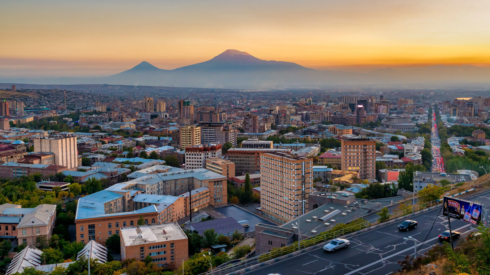
Տվյալներ / Բնություն / Տնտեսություն /Գիտություն/Կրթություն /Մշակույթ / Զբոսաշրջություն / Լոգիստիկա
ՏՎՅԱԼՆԵՐ
Աշխարհագրական դիրք
Երևանը գտնվում է Արարատյան դաշտավայրի հյուսիս-արևելյան հատվածում՝ Հրազդան գետի երկու ափերին, ծովի մակերևույթից 865–1390 մ. միջինում՝ 1128 մ. բարձրության վրա։ Մայրաքաղաքը գտնվում է Թուրքիայի պետական սահմանից մոտ 25 կմ հեռավորության վրա և վարչական սահմաններով հարում է միայն ՀՀ մարզերին։
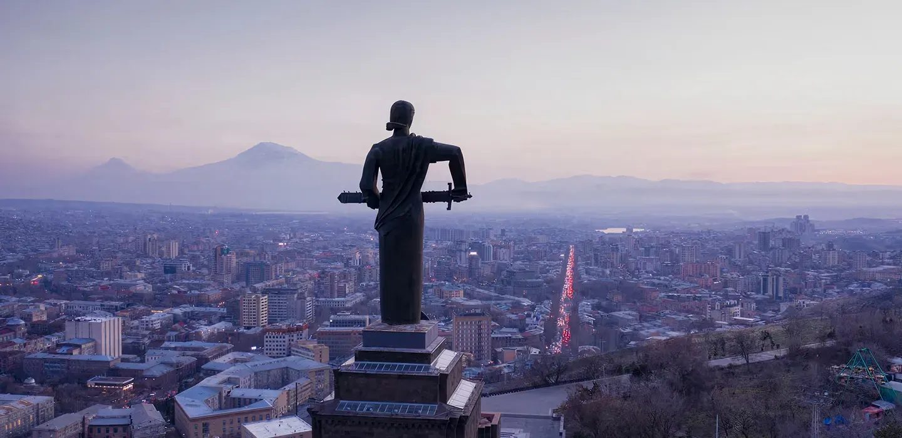
Երևանի աշխարհագրական կոորդինատներն են՝
Տեղակայված է հյուսիսային լայնության 40° 04՛– 40° 14 և արևելյան երկայնության՝ 44° 23՛ – 44° 37՛ միջև:
40° 10′ 49″ հյուսիսային լայնության
44° 30′ 52″ արևելյան երկայնության
Տասնորդական ձևաչափով՝
Լայնություն՝ \40.1804
Երկայնություն՝ 44.5145
Կենտրոնի կոորդինատներն են՝ 40.1735°N 44.511°E
Քաղաքի առավելագույն երկարությունը հյուսիսից հարավ կազմում է շուրջ 19.7 կմ, արևմուտքից արևելք՝ 19.1 կմ։
Սահմանակից մարզեր
Վարչական սահմանով քաղաքը սահմանակից է ՀՀ Արարատի, Արմավիրի, Արագածոտնի և Կոտայքի մարզերին:
Երևանը՝ Հայաստանի մայրաքաղաք
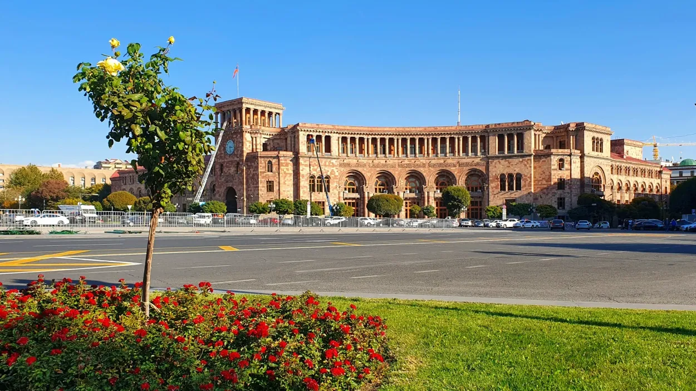
1918 թվականից Երևանը Հայաստանի Հանրապետության մայրաքաղաքն է և պատմական Հայաստանի 12-րդ ու ամենամեծ մայրաքաղաքը։ Այն նաև ներկայիս Հայաստանի Հանրապետության 49 քաղաքներից ամենախոշորն է։
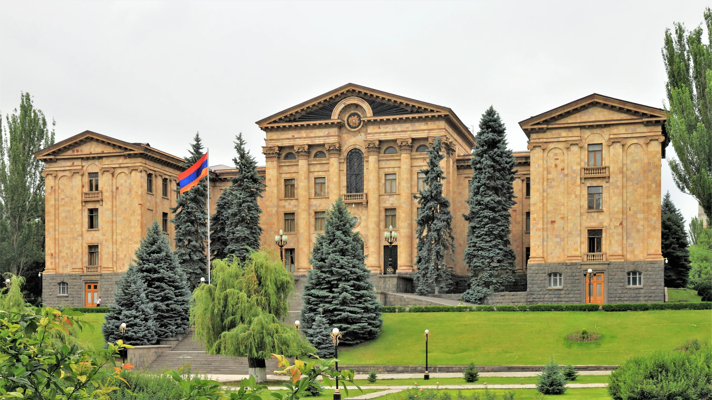
Երևանը երկրի քաղաքական, վարչական, տնտեսական, գիտական և մշակութային գլխավոր կենտրոնն է
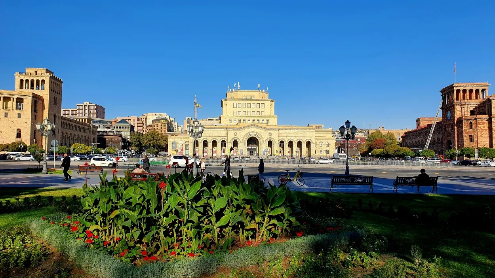
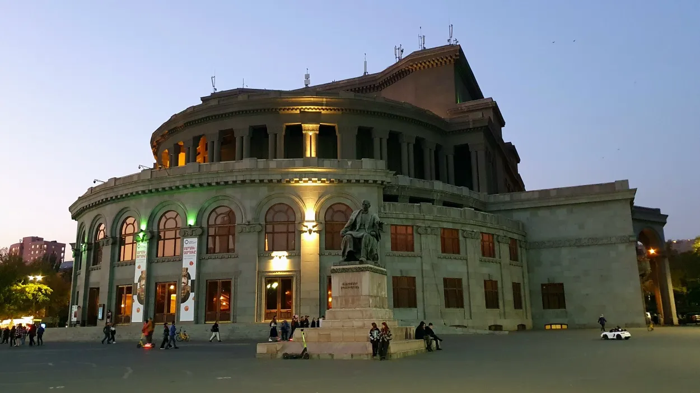
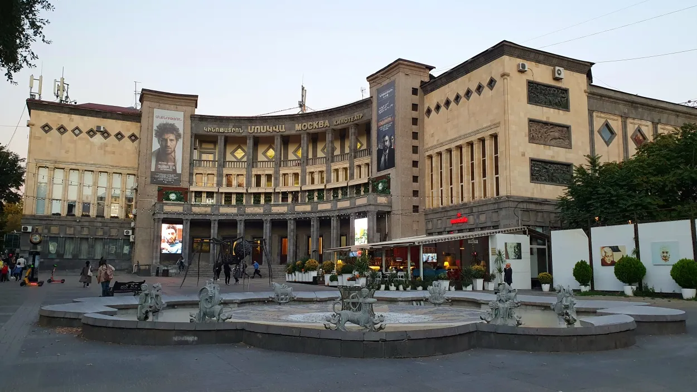
Մայրաքաղաքում են գտնվում պետական կառույցները, միջազգային կազմակերպությունների ներկայացուցչություններ, այդ թվում՝ ՄԱԿ-ի գրասենյակները և բազմաթիվ երկրների դեսպանատներ ու հյուպատոսություններ։
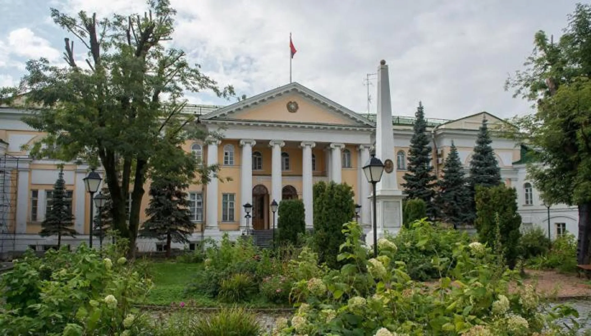
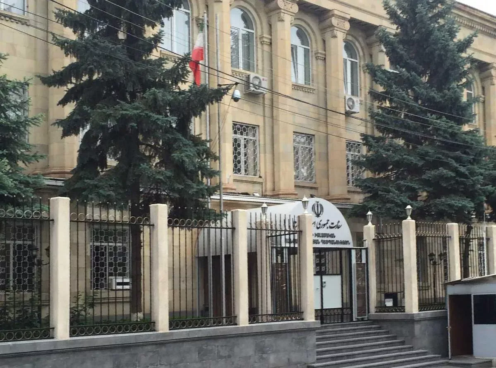
Այստեղ գործում են խոշոր կրթամշակութային հաստատությունները, ինչպես նաև երկրի հիմնական տնտեսական ու տեղեկատվական կենտրոնները։
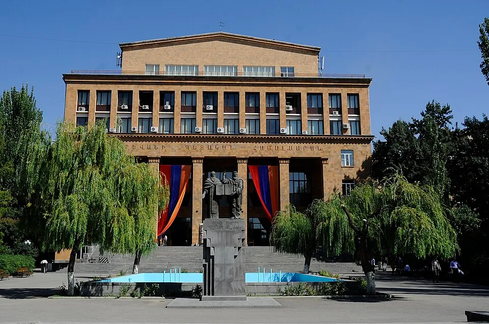
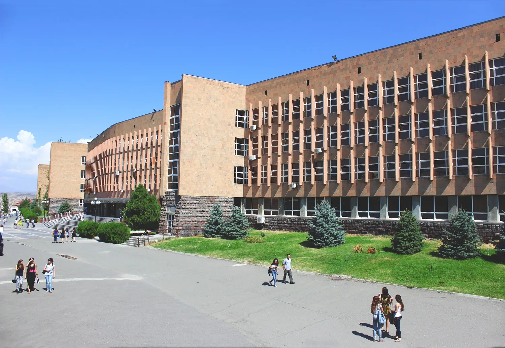
Վարչական շրջաններ
Ներկայումս Երևանը բաժանված է 12 վարչական շրջանների․ Աջափնյակ, Ավան, Արաբկիր, Դավթաշեն, Էրեբունի, Կենտրոն, Մալաթիա-Սեբաստիա, Նոր Նորք, Նորք-Մարաշ, Նուբարաշեն, Շենգավիթ և Քանաքեռ-Զեյթուն։
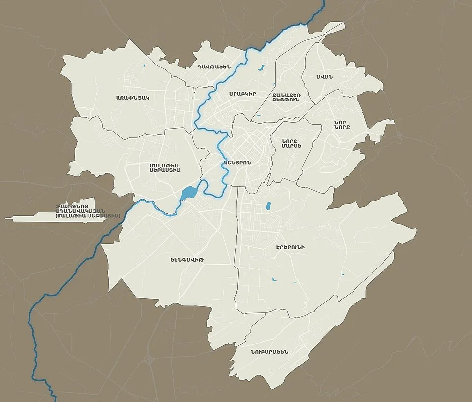
Պատմական ժառանգություն
Երևանը աշխարհի հնագույն քաղաքներից է ՝ հազարամյակների պատմությամբ, քաղաք, որ 29 տարով ավելի հին է, քան Հռոմը: Քաղաքի պատմությունը սկիզբ է առնում մ.թ.ա. 782 թվականին, երբ Արգիշտի I-ը հիմնադրեց Էրեբունի ամրոց բերդաքաղաքը։Վերջինս տեղակայված էր այժմյան Երևանի հարավային հատվածում, մի բարձունքի վրա:
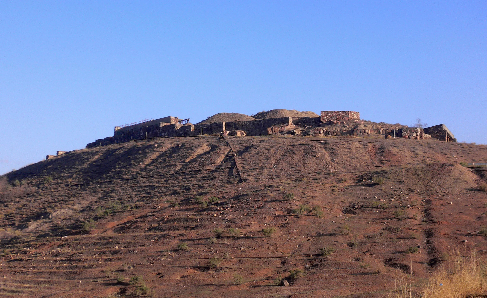
1950 թվականին Արին Բերդ բլրի պեղումների ժամանակ հայտնաբերվեց սեպագիր արձանագրություն, որտեղ նշվում էր Էրեբունիի հիմնադրման թվականը։ Այդ պատճառով Երևանը համարվում է աշխարհի այն քիչ քաղաքներից մեկը, որն ունի իր ճշգրիտ «ծննդյան վկայականը»։ Էրեբունի բերդաքաղաքից էլ սկիզբ է առել մեր նորօրյա Երևանը:
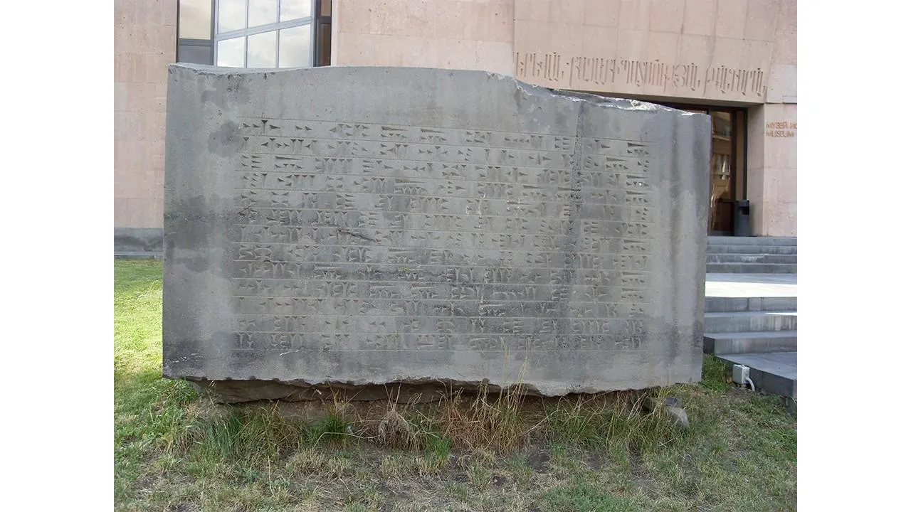
Հատկանշական է, որ Արգիշտիի 13 -տողանոց սեպագիր արձանագրության 5-րդ տողում նշվում է, որ Էրեբունի բերդաքաղաքը եղել է Ուրարտու երկրի փառքը։ Հետաքրքիր զուգադիպությամբ, Բիայնա-Ուրարտուի օրինական ժառանգ հայ ժողովուրդը այսօր էլ Երևանն է համարում իր երկրի փառքը։
Անվան ծագումը
«Երևան» անվան ծագման մասին վարկածները.
Բնակեցվածություն
Երևան-Էրեբունին բնակեցված է եղել վաղնջական ժամանակներից։ 1916 թվականին Նիկողայոս Մառի և Հովսեփ Օրբելիի կողմից Վանում իրականացված հնագիտական պեղումների ընթացքում հայտնաբերված արձանագրություններից պարզ է դարձել, որ Արգիշտի Ա թագավորը մ․թ․ա․ 782 թվականին Էրեբունի քաղաք-ամրոցի հիմնադրումից հետո այստեղ է բնակեցրել շուրջ 6600 հայալեզու ռազմիկների, որոնց բերել էր Ծուպա և Խաթե երկրներից։ Մ․թ․ա․ 595 թվականին ամրոցը լքվել է։
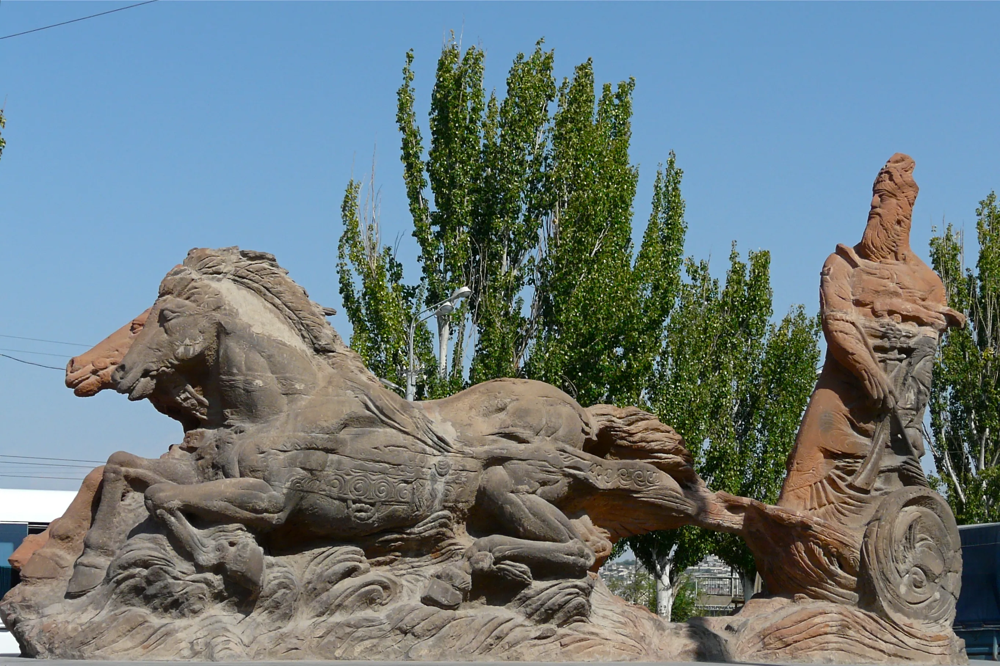
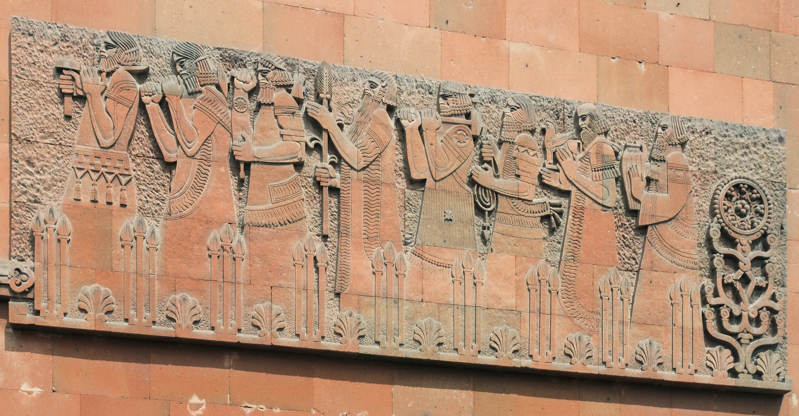
Հնագույն ժամանակներում Էրեբունի բերդաքաղաքը եղել է բազմազգ բնակավայր և կարևոր ռազմավարական կենտրոն, որտեղ բնակվել են ուրարտացիներ, խեթեր, ասորիներ, մարեր, սկյութներ, պարսիկներ և տարածաշրջանի այլ ժողովուրդների ներկայացուցիչներ։ Իր նպաստավոր դիրքի շնորհիվ քաղաքը դարձել էր տարբեր մշակույթների, առևտրական ճանապարհների և քաղաքակրթությունների խաչմերուկ՝ կարևոր դեր ունենալով ողջ տարածաշրջանի պատմության մեջ։
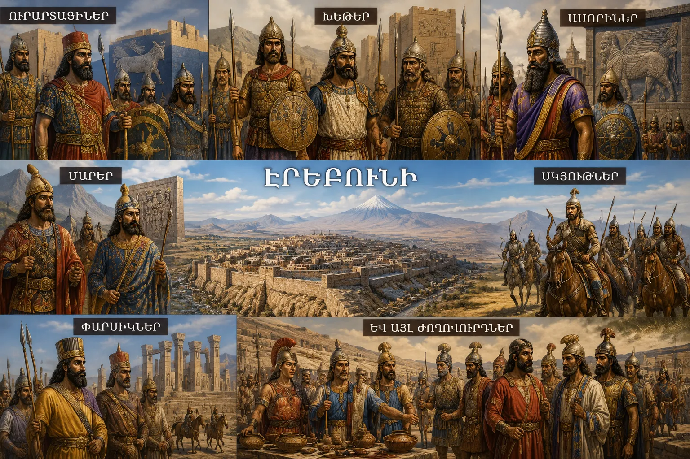
Մինչև 1604 թվականի մեծ տեղահանությունը Երևանում բնակվում էր շուրջ 373 քրիստոնյա ընտանիք։ Իր պատմության ընթացքում քաղաքը բազմիցս ենթարկվել է պատերազմների, ավերածությունների և արհավիրքների, ինչի հետևանքով զգալիորեն փոխվել է նրա ժողովրդագրական պատկերը։
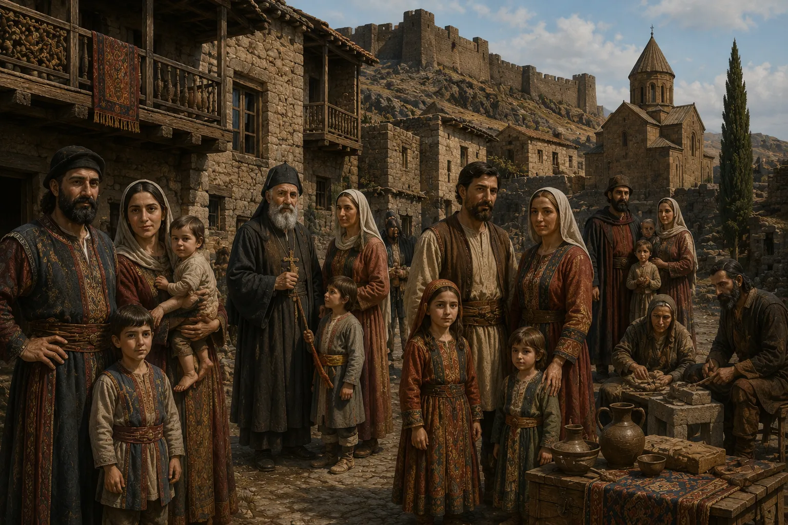
Բնակչություն
1950–1980-ական թվականներին քաղաքի բնակչությունը կտրուկ աճեց․ եթե 1950-ականներին այն կազմում էր մոտ 301 հազար մարդ, ապա 1990 թ. հասավ շուրջ 1 միլիոն 218 հազարի՝ կազմելով հանրապետության քաղաքային բնակչության ավելի քան կեսը։
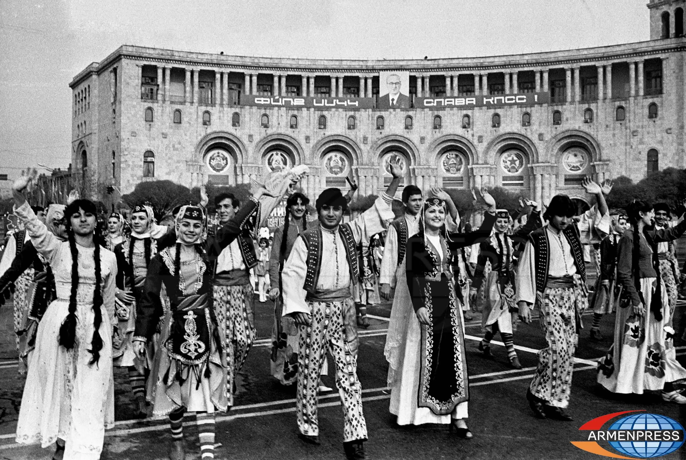
Անկախության տասնամյակներում բնակչության աճի տեմպերը նվազել են, և ներկայումս Երևանի բնակչությունը կազմում է շուրջ 1,1 միլիոն մարդ՝ Հայաստանի Հանրապետության բնակչության ավելի քան մեկ երրորդը։ 2001 թվականի մարդահամարի տվյալներով՝ քաղաքի բնակչության շուրջ 98,6 %-ը հայեր են։ Երևանում բնակվում են նաև ռուսներ, եզդիներ, ուկրաինացիներ, հույներ, ասորիներ և այլ ազգությունների ներկայացուցիչներ։
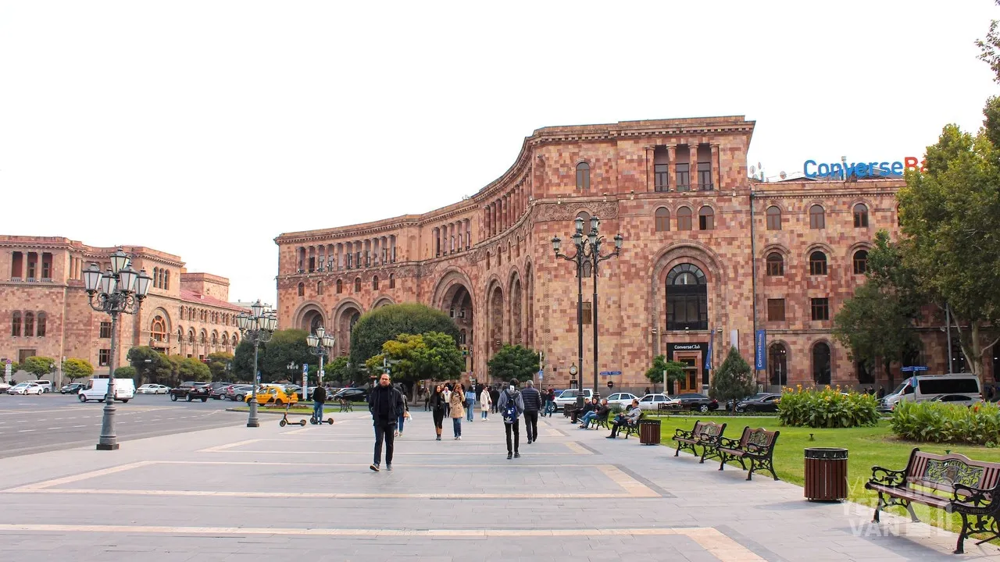
Երևանի խորհրդանիշերը
Երևանի դրոշը, զինանշանը և օրհներգը որպես ՀՀ մայրաքաղաքի պաշտոնական խորհրդանիշներ հաստատվել են 2004 թվականի սեպտեմբերի 27-ին։
Երևանի դրոշը
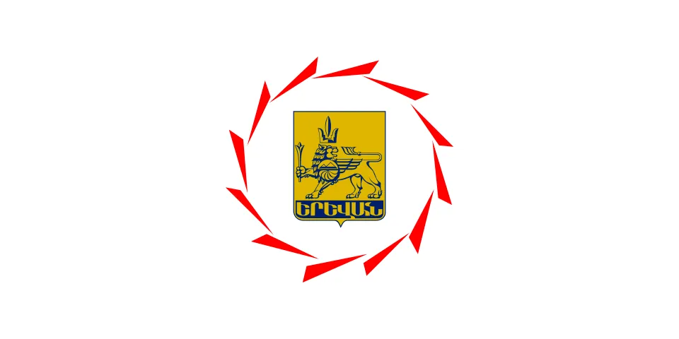
Դրոշի լայնության և երկարության հարաբերակցությունը 1։2 է։ Այն կազմված է սպիտակ, կարմիր և բրոնզագույն գույներից։ Կենտրոնում պատկերված է Երևանի բրոնզագույն զինանշանը՝ շրջապատված 12 կարմիր եռանկյունիներով, որոնք խորհրդանշում են Հայաստանի 12 մայրաքաղաքները։ Սպիտակ գույնը խորհրդանշում է պարզություն և հստակություն։ Դրոշի հեղինակներն են՝ Կ. Աբրահամյանը և Կ. Փաշյանը:
Երևանի զինանշանը
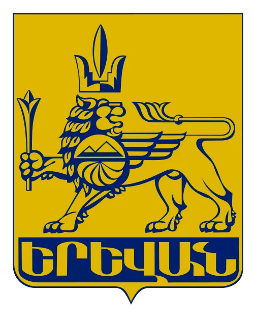
Զինանշանի կապույտ ֆոնին պատկերված է գավազան բռնած առյուծը՝ իշխանության խորհրդանիշը։ Առյուծի կրծքին պատկերված է Արարատ լեռը՝ հավերժության նշանի վրա։ Գլխավերևում տեղադրված թագը խորհրդանշում է Կենաց ծառը։ Հեղինակ՝ Ա. Սոխիկյան:
Երևանի օրհներգը
2004 թվականից Երևանի պաշտոնական օրհներգն է դարձել Էրեբունի-Երևան երգը՝ Պարույր Սևակի խոսքերով և Էդգար Հովհաննիսյանի երաժշտությամբ։
«Էրեբունի-Երևան»
Երևան դարձած իմ Էրեբունի,
Դու մեր նոր Դվին, մեր նոր Անի։
Մեր փոքրիկ հողի դու մեծ երազանք,
Մեր դարե կարոտ, մեր քարե նազանք…
«Էրեբունի-Երևան» տոնակատարություն

1968 թվականի հոկտեմբերին անցկացվեց «Էրեբունի-Երևան»-ի առաջին պաշտոնական տոնակատարությունը՝ նշելով հայոց 12-րդ մայրաքաղաքի հիմնադրման 2750-րդ տարելիցը։ Հոբելյանական հանդիսությունների շրջանակներում 2750 հոգանոց երգչախումբն առաջին անգամ կատարեց մայրաքաղաքի «Էրեբունի-Երևան» օրհներգը, Արին-Բերդ բլրի ստորոտում բացվեց Երևանի հիմնադրման թանգարանը, հիմնվեց 2750 շատրվաններից բաղկացած պուրակը, Արին-Բերդի ստորոտում տնկվեց 2750 ծառ, նախագծվեց «Էրեբունի» գորգը:
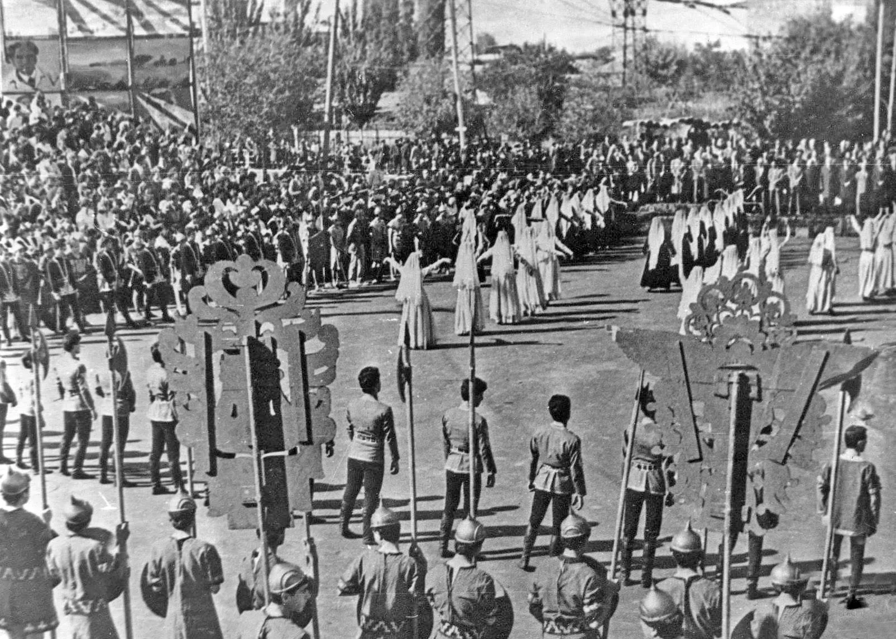
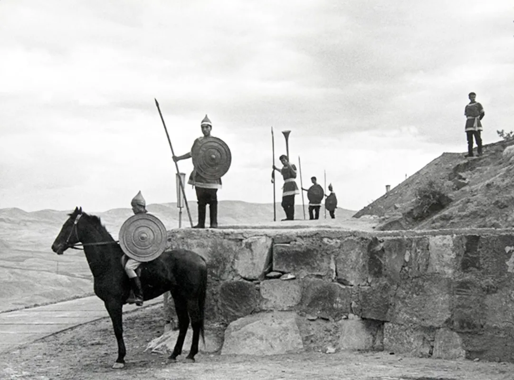
Հանրապետության հրապարակում տեղադրվեց աղբյուր-հուշարձան: 2008 թ.-ին մեծ շուքով նշվեց նաև Երևանի հիմնման 2790-րդ տարելիցը:
Երևան դարձած իմ Էրեբունի
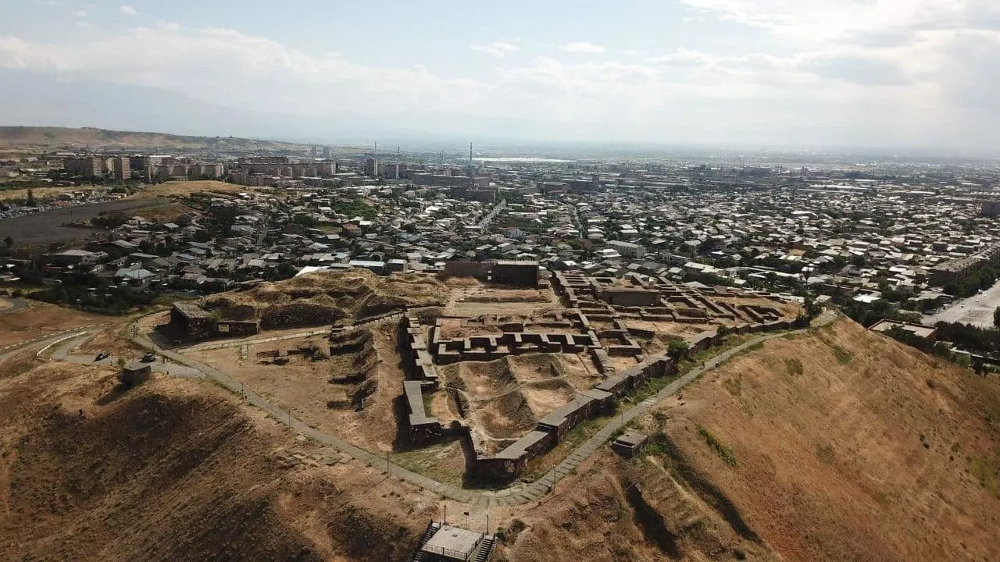
Երևան դարձա՜ծ իմ Էրեբունի,
Դու մեր նոր Դվին, մեր նոր Անի,
Մեր փոքրիկ հողի դու մեծ երազանք,
Մեր դարե կարոտ, մեր քարե նազանք։
Որտեղի՞ց է սկսվել այն հեքիաթը, որ հիմնավորվեց Հայոց բնաշխարհի այս ամենաբարենպաստ անկյունում։ Ք.ա. 782 թվականին Արգիշտի I-ը՝ Մենուայի որդին, Արին բերդ բլրի վրա հիմնեց Էրեբունի ամրոցը՝ ի հզորություն Բիայնիլի երկրի և ի սարսափ թշնամիների։ Այսպես ծնվեց քաղաք-ամրոցի առաջին շերտը, որը դարեր անց պիտի դառնար Երևան։
Տեղանքը ինքնին էպիկական է՝ իր իշխող դիրքով ու կենդանի ռելիեֆով՝ բլուրներով, իջվածքներով ու բարձրություններով, որտեղ բնությունը կարծես ինքն է ձևավորել ապագա քաղաքի բնավորությունը։ Ու հենց այստեղ է պարզ դառնում, թե ինչու դարեր առաջ հենց այս վայրը ընտրվեց…
Հազարամյա բնակավայրը վաղուց արդեն դուրս է եկել փոքրիկ բլրի սահմաններից։ Այն աստիճանաբար մագլցել է շրջակա լանջերով, անցել Հրազդանի ու Նորքի ձորերը, հասել նոր բարձունքների ու սարահարթերի՝ վերածվելով բոլոր ուղղություններով տարածվող բազմաշերտ ու կենդանի քարե հսկայի, որ այսօր մենք ճանաչում ենք որպես Երևան, որն իր անվան մեջ կրոմ է նաև մեր հնագույն Վանի արձագանքը։
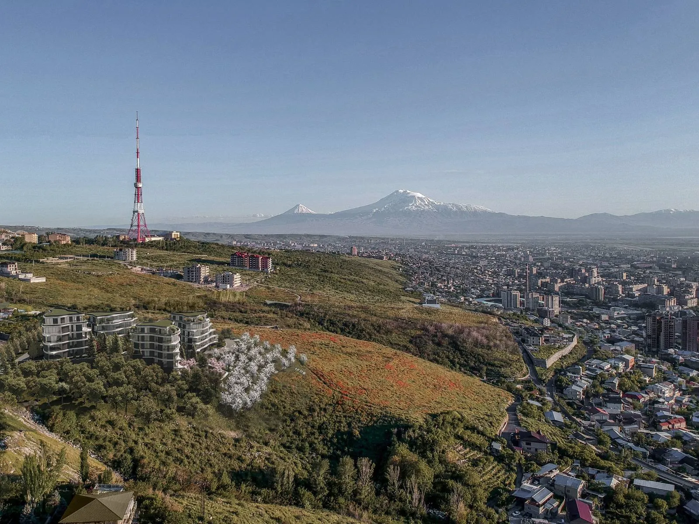
Արարատի վեհաշուք պատկերով
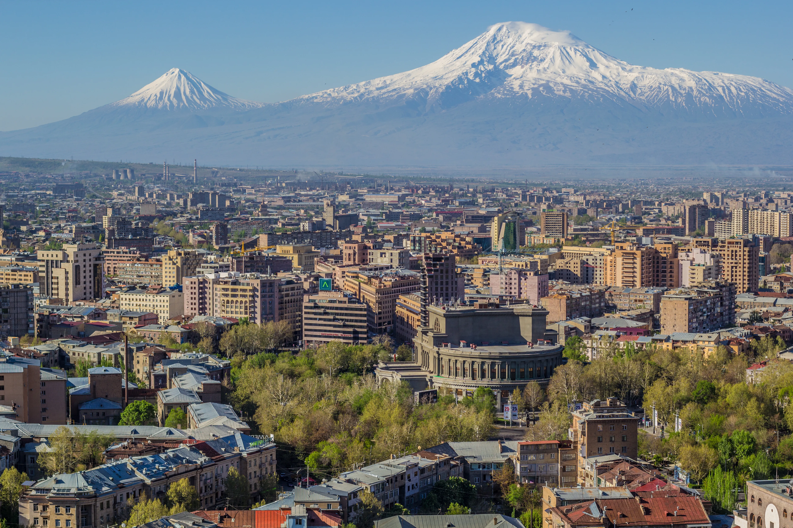
Հայաստանի վարդագույն մայրաքաղաքը սփռված է բիբլիական Արարատի ստորոտին՝ աշխարհի ամենագեղեցիկ ու խորհրդանշական լեռներից մեկի դիմաց։ 5165 մետրի հասնող հայի բարձրագույն նվաճումը կանգնած է Երևանի առջև՝ իբրև հզոր պահապան:
Երևանը՝ Արարատի վեհաշուք պատկերով, հայկական ամենահայտնի ու սիրված համայնապատկերն է։ Անհնար է պատկերացնել քաղաքը առանց Մասիս սարի անզուգական ներկայությանԼ Հորիզոնը պսակող Մեծ ու Փոքր Մասիսները մշտապես ոգեշնչել են գեղանկարիչների, լուսանկարիչների ու բանաստեղծների։ Արարատը տեսանելի է քաղաքի գրեթե բոլոր հատվածներից և օրվա ընթացքում մշտապես փոխում է իր կերպարը՝ վաղորդյան մշուշից մինչև մայրամուտի հուրհացող ցոլքերը։
Արարատյան դաշտի ու Հայոց լեռների տաքուկ գրկում
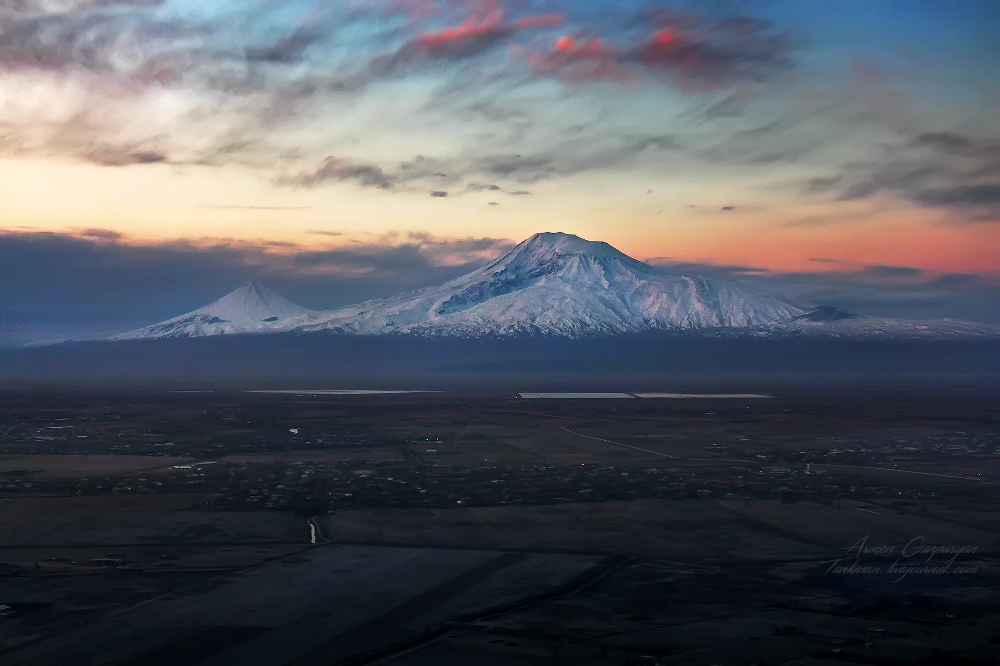
Երևանը հարմարավետ ընկղմված է Արարատյան դաշտի պայտաձև գոգավորությունում՝ շրջապատված հրաբխային լեռներով, որոնց լանջերից ձևավորվել են քաղաքի բարձունքներն ու հարթությունները՝ Կոնդից մինչև Նորք։
Քաղաքը գտնվում է բարձրադիր պլատոյի վրա՝ երեք կողմից շրջապատված լեռներով․ հյուսիս-արևմուտքում՝ շողշողում է քառագագաթ Արագածը, հյուսիսում՝ Քանաքեռի սարահարթը, արևելքում՝ Գեղամա լեռները, իսկ դեպի արևմուտք և հարավ բացվում է լայնարձակ Արարատյան դաշտը, որի խորապատկերում բարձրանում են Արարատի Մեծ և Փոքր գագաթները՝ հայ ժողովրդի խորհրդանշական Սիսն ու Մասիսը, իրեց վեհ ներկայությամբ եզրափակելով հորիզոնը։
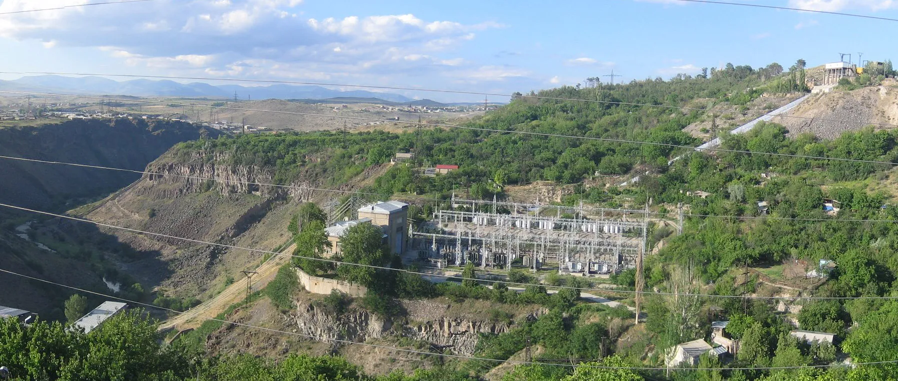
Արա լեռան փառահեղ տեսքը հեռվում յուրահատուկ շուք է տալիս քաղաքին, հատկապես Նոր Նորքին: Լեռան ֆոնին, աջ ու ձախ կողմերում երևում են նաև Հայկական լեռնաշխարհի մյուս հսկաները՝ Արագածն ու Արարատը:
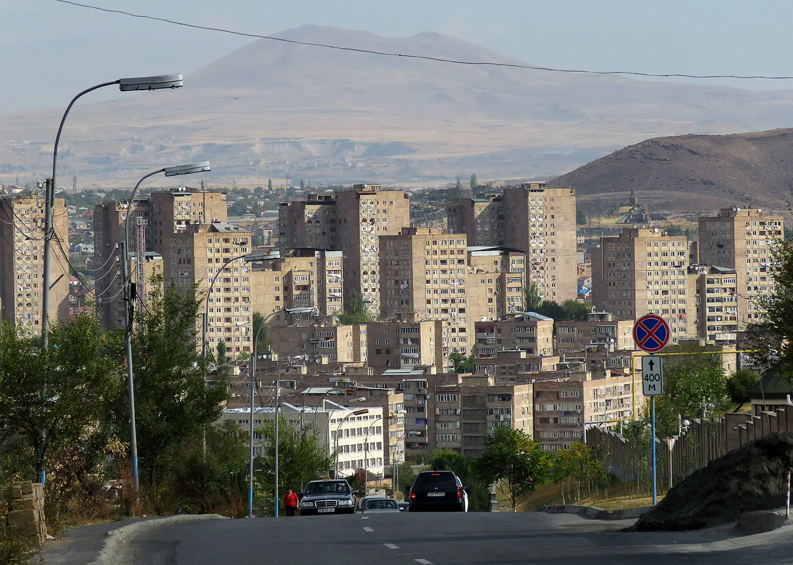
Արևելքում հեքիաթային տեսարաններ են բացվում Գառնիի բարձունքների ու հեռուներում գծագրվող Հատիսի համայնապատկերով։ Երևանի այս բացառիկ դիրքն ու բազմաշերտ բնապատկերները մշտապես եղել են արվեստագետների ու ճանապարհորդների ներշնչանքի աղբյուր։
Թամանյանի վարդագույն քաղաքը՝ արևի ճառագայթների պես
Ալեքսանդր Թամանյանի գաղափարն էր՝ ստեղծել ազգային ոգի ունեցող ժամանակակից մայրաքաղաք՝ համադրելով հայկական ճարտարապետական ավանդույթներն ու եվրոպական քաղաքաշինության սկզբունքները։ Այդ մտահղացմամբ ծնվեց «վարդագույն Երևանը»՝ ազգային վերածննդի խորհրդանիշ և նոր պետականության քաղաքային մարմնավորում։ Երևանի այս բացառիկ դիրքն ու բազմաշերտ բնապատկերները մշտապես եղել են արվեստագետների ու ճանապարհորդների ներշնչանքի աղբյուր։
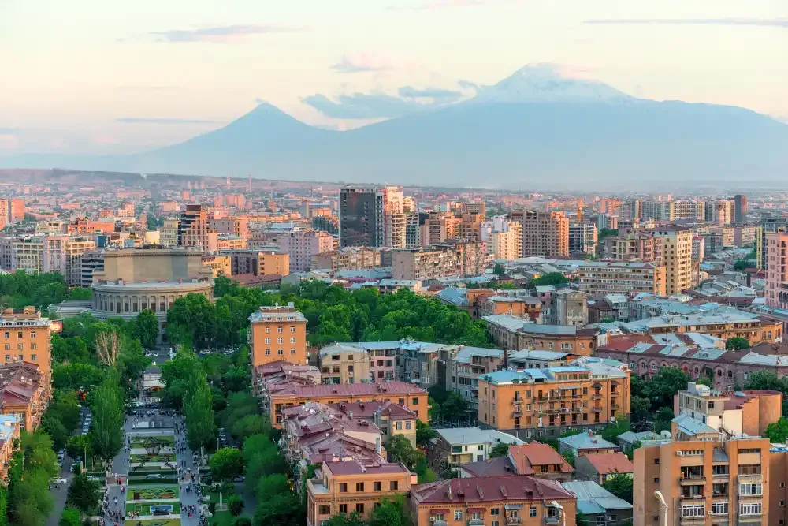
Այս բնաշխարհը դարեր շարունակ հիացրել էր ոչ միայն տեղաբնակներին, այլև բազմաթիվ օտարազգի ճանապարհորդների, մտավորականների, և հատկապես, ճարտարապետների, որոնց համար Երևանը յուրօրինակ աշխարհ էր՝ իր լեռնային լույսով, քարե շնչով ու հզոր տարածական ընկալմամբ: Սա պետք է արտացոլվեր քաղաքի հատագծում: «Հյուսիսային ճառագայթը» հենց այդ հանճարեղ գաղափարն էր: Թամանյանը Երևանը պատկերացնում էր որպես արևի ճառագայթների պես կենտրոնից տարածվող քաղաք, որտեղ փողոցներն ու պողոտաները բացվում են բոլոր ուղղություններով և միավորվում օղակաձև կառուցվածքով՝ ստեղծելով միասնական քաղաքային համակարգ։
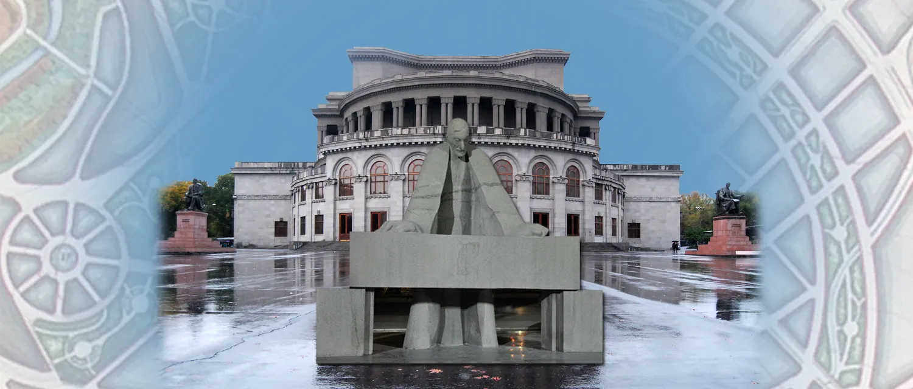
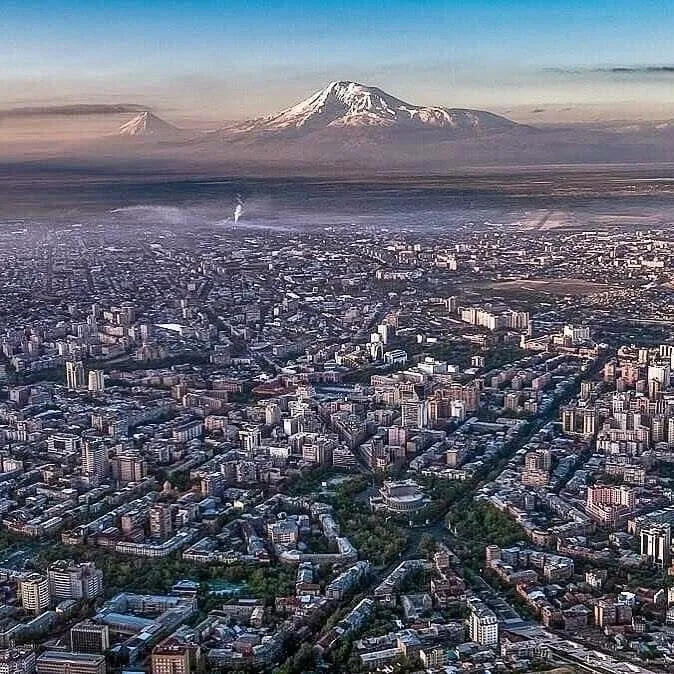
Թամանյանի նախագծած «քաղաք-այգին» պիտի լիներ բաց, լուսավոր ու կենսառատ միջավայր՝ կառուցված հայկական տուֆի երանգներով, լայն պողոտաներով ու կանաչ տարածքների ներդաշնակությամբ, որտեղ արևն ու լույսը ջերմացնում են մարդկանց հոգիներն ու սրտերը։ Քաղաքը կառուցվեց իր բնական միջավայրին համահունչ՝ տեղավորվելով բարդ ռելիեֆի մեջ և ձևավորվելով որպես ամբողջական համակարգ, կարծես լեռների ու բլուրների մեջ ընկած բնական ամֆիթատրոն՝ կողմնորոշված դեպի Արարատ՝ հայ ժողովրդի հավերժության խորհրդանիշը։
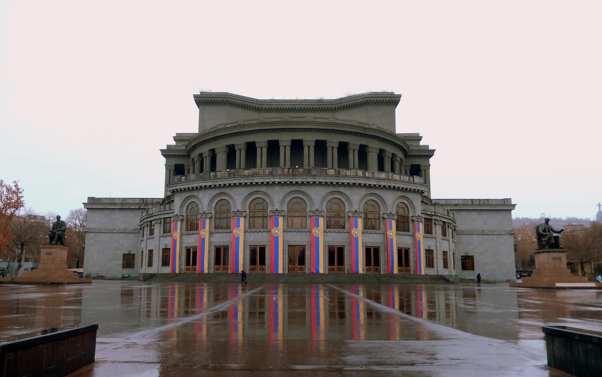
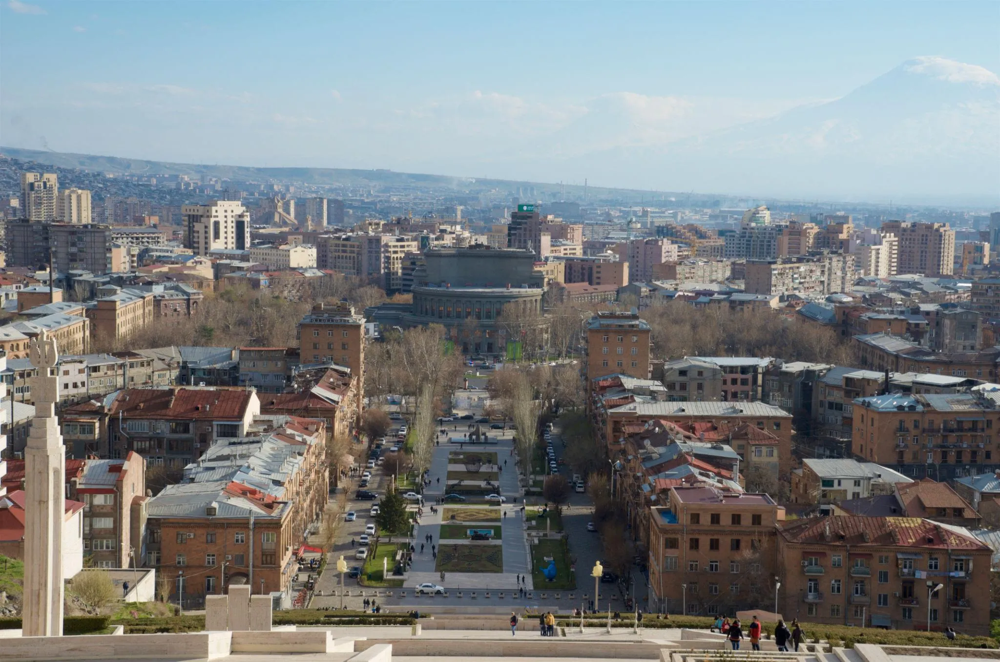
Թամանյանի ստեղծած քաղաքաշինական հիմքը շարունակում է որոշել քաղաքի կառուցվածքն ու զարգացման տրամաբանությունը։ Այս փայլուն գաղափարը լավագույնս դրսևորվում է հատկապես բարձրադիր դիտակետերից, որտեղ վարդագույն Երևանը՝ իր գեղեցիկ պատշգամբներով բացվում է որպես լույսի ու լեռների միջև տարածվող կենդանի օրգանիզմ՝ իր ճառագայթաձև կառուցվածքով և Արարատի մշտական ներկայությամբ։
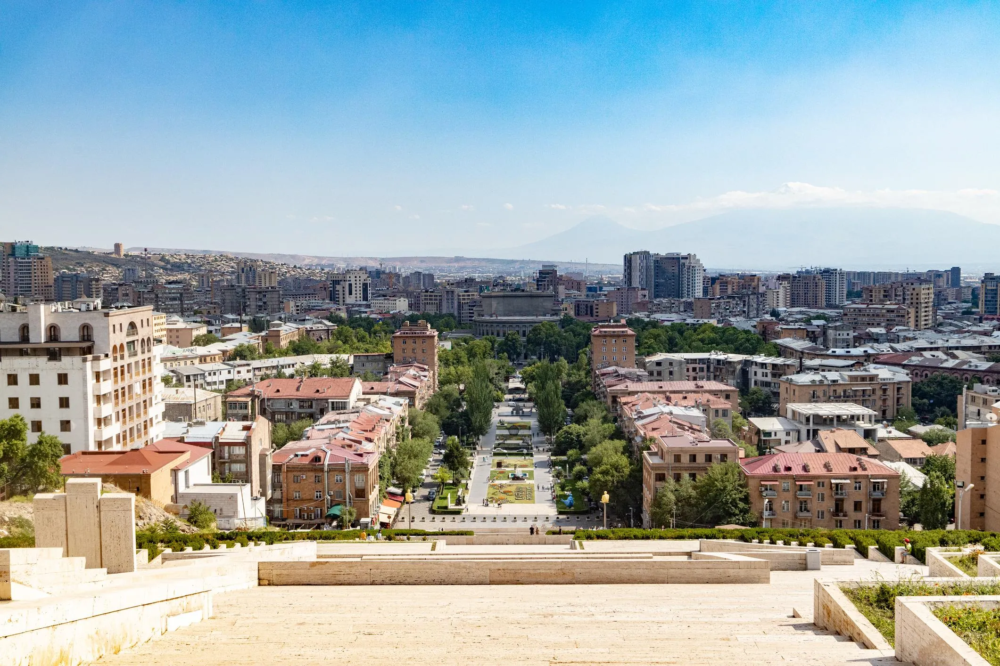
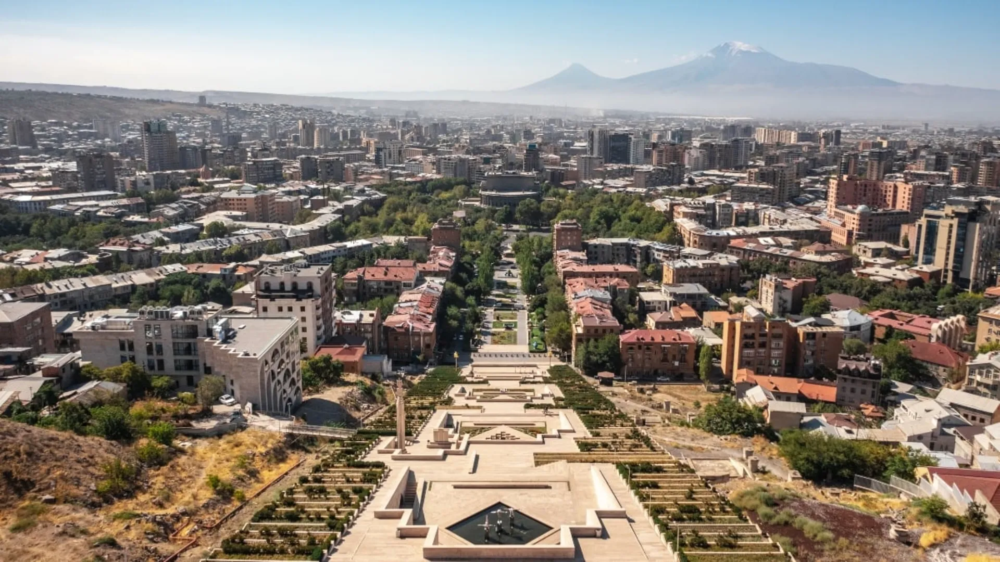
Քաղաքի գլխավոր պողոտաները ուղղված էին դեպի Արարատ լեռը՝ այն դարձնելով Երևանի բնական ու խորհրդանշական հորիզոնը և ստեղծելով Երևանի յուրահատուկ դիմագիծն ու գաղափարական առանցքը: Դառնալով մայրաքաղաքի բնական և խորհրդանշական կենտրոն՝ Արարատը միաձուլում էր քաղաքն ու հայկական բնաշխարհը մեկ ամբողջության մեջ, մշտապես հիշեցնելով նաև երբեմնի Արարատյան թագավորոթյան մասին: Հենց այդ գաղափարը պիտի իր շուրջը համախմբեր աշխարհասփյուռ հայությանը:
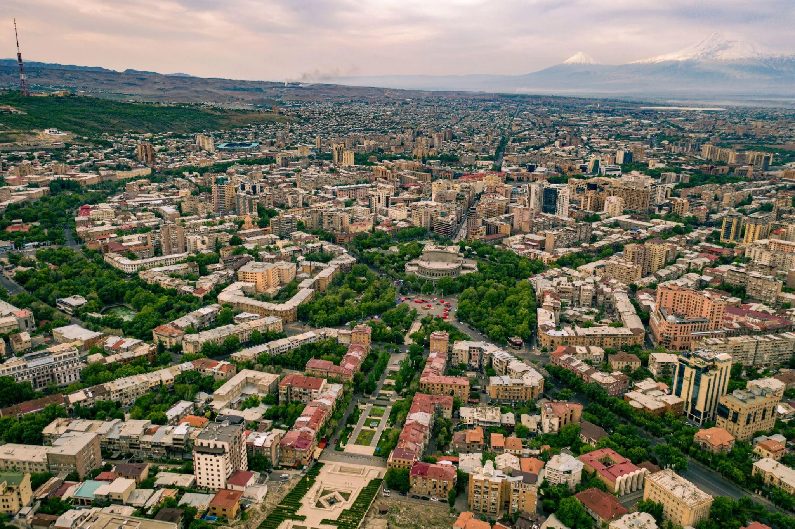
Երևանի սառը ջուրը
Աշխարհում քիչ քաղաքներ կան, որ կարող են պարծենալ իրենց խմելու ջրով: Երևանի համբավավոր ջուրը՝ մաքուր, սառնորակ ու քաղցրահամ. քաղաքը ստանում է հիմնականում 10 աղբյուրներից՝ տարբեր համայնքներում տեղակայված հորատանցքերի ու ջրհորների միջոցով: Լեռնային աղբյուրներից ու արտեզյան ավազաններից եկող ջուրը սառն է ու թեթև, և ունի իր յուրահատուկ համը։ Երևանի սառը ջուրը վաղուց է դարձել քաղաքի ամենակենդանի խորհրդանիշներից մեկը։
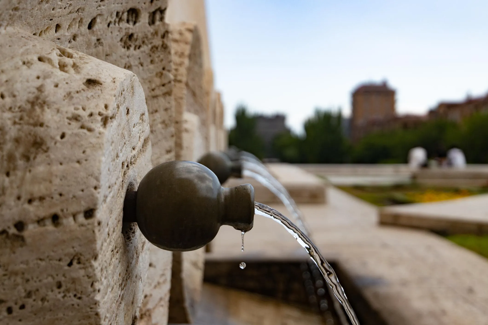
Աորտեղ խմելու ջուրը հոսում է գրեթե ամեն քայլափոխի՝ բակերում, այգիներում հրապարակներում։ Հայաստանում ջրի պաշտամունքը գալիս է վաղնջական ժամանակներից: Երևանում այն նույնպես ցայտուն դրսևորում ունի, թեկուզ բյուրավոր ու բազում ցայտաղբյուրների տեսքով:
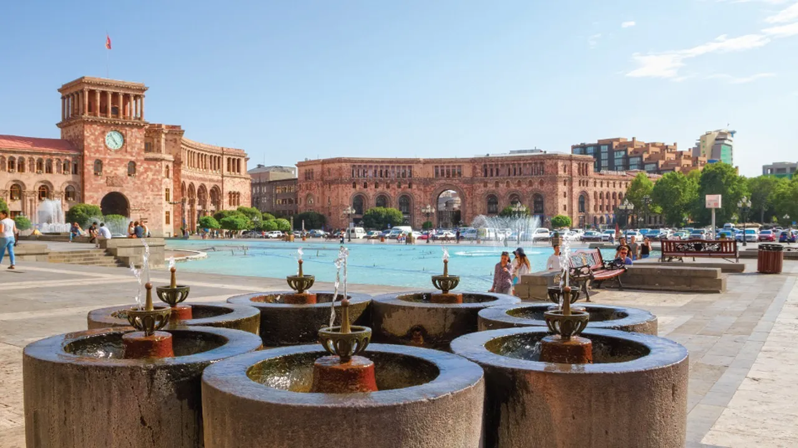
Երևանի ցայտաղբյուրները՝ հայտնի «պուլպուլակները» ոչ միայն այս հրաշալի ջրի աղբյուրներ են, այլև քաղաքի կենսակերպի անբաժան մասն են․ նաև հյուրընկալության ու առօրյա քաղաքային մշակույթի խորհրդանիշ։ Ամառվա շոգին նրանց շուրջ ձևավորվում է հարազատ ու աշխույժ մթնոլորտ։
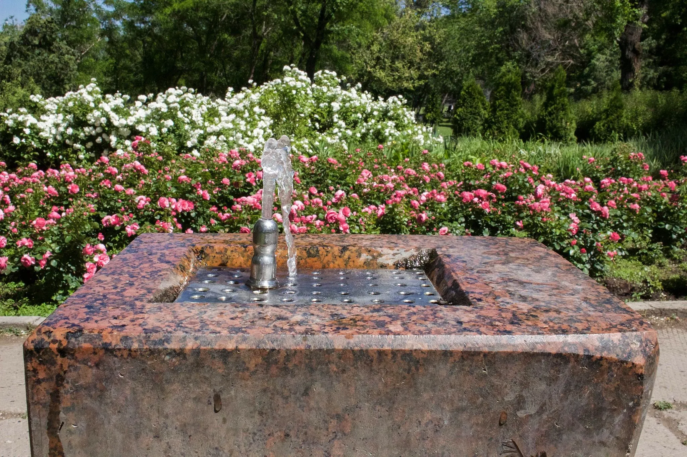
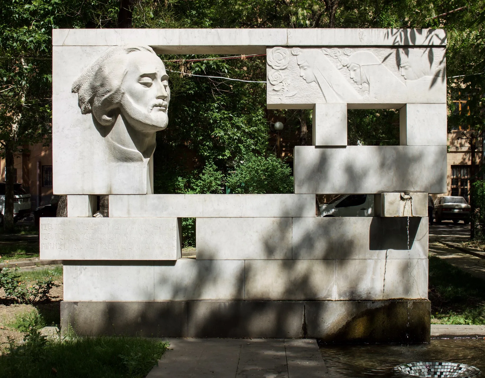
Քաղաքի կենտրոնական այգիներից մեկում ժամանակին անգամ ջրավաճառող տղայի արձանն է կանգնեցվել, որն այդպես էլ կոչվել է՝ «Եր Ջրավաճառող տղան » կամ «Երևանի սառը ջուրը», մի բան, որ նույնպես եզակի երևույթ է: Այն հին Երևանի կոլորիտային խորհրդանիշներից է, որը հիշեցնում է այն օրերը, երբ Բուլվարի պատանիները անցորդներին կժերով էին վաճառում ՝երևանյան սառնորակ ջուրը՝ ստեղծելով քաղաքային յուրատիպ միջավայր:
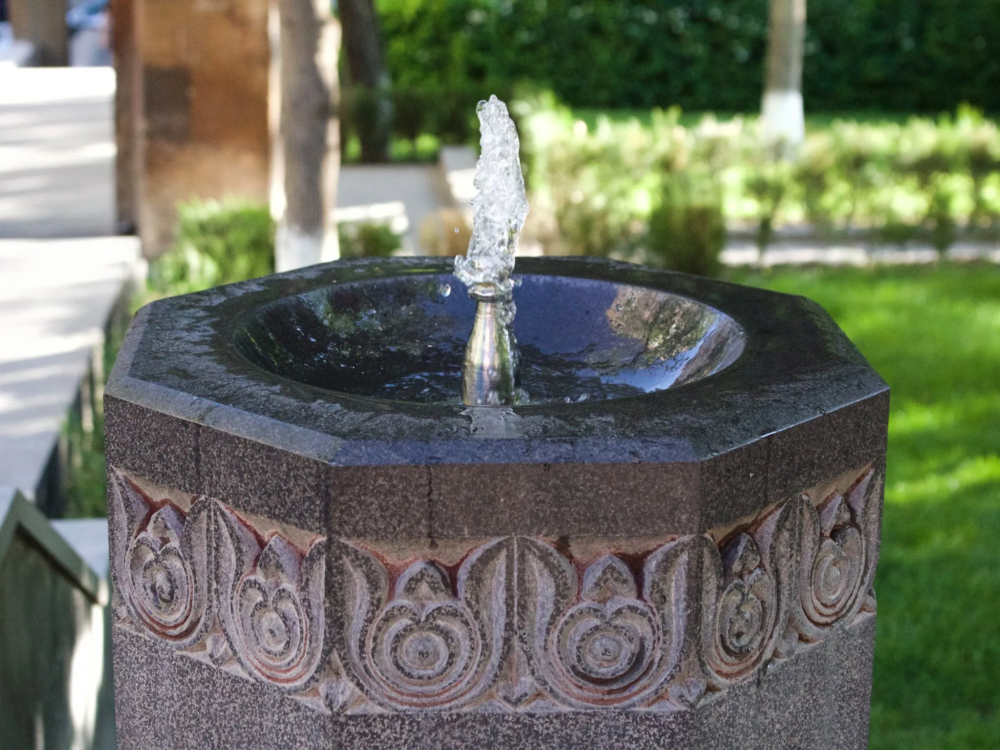
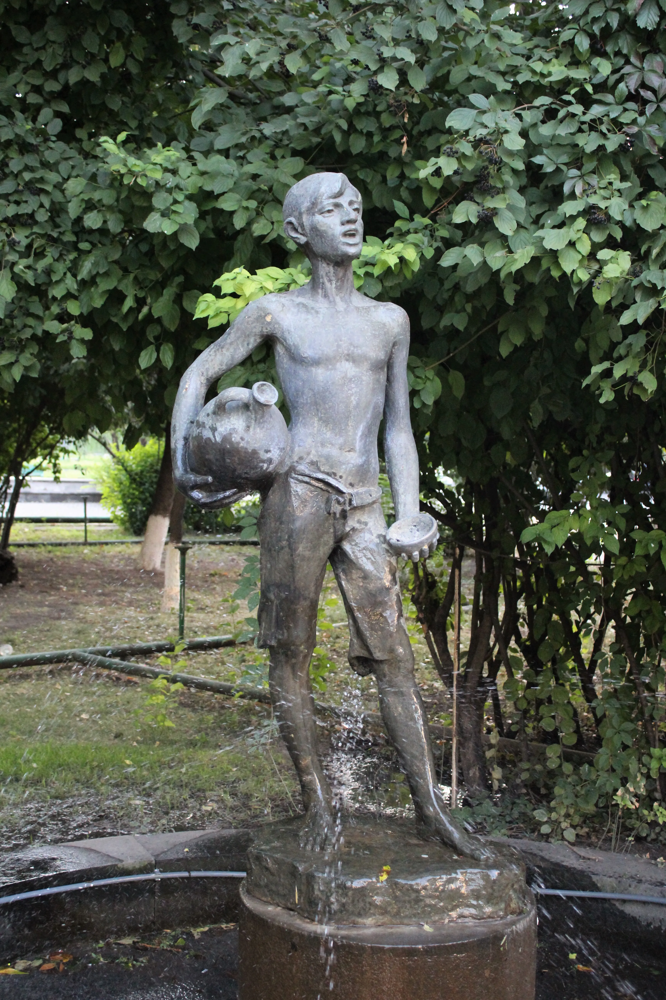
«Երևանի սառը ջուրը» վաղուց պարզապես ջուր չէ․ այն քաղաքի հիշողությունն է, համն ու հոգին և նրա կարևոր այցեքարտերից մեկը։
Երևանյան երեկոներում
Երեկոյան Երևանը հաճախ թվում է մի ուրիշ՝ անծանոթ աշխարհ, սակայն իրականում մթնշաղից հետո քաղաքը բացահայտում է իր ավելի նուրբ ու մարդկային դեմքը։ Քարե քաղաքը դառնում է ջերմ ու լույսերով ողողված, որտեղ առօրյա հոգսերը նահանջում են՝ իրենց տեղը զիջելով հանգստին ու ներքին լռությանը։
Այդ պահին քաղաքում սկսվում է մշակութային կյանքը․ թատրոններում բարձրանում է վարագույրը, համերգասրահներում հնչում է երաժշտությունը, և Երևանը վերածվում է մի մեծ բեմի, որտեղ յուրաքանչյուրն իրենն է գտնում։ Փողոցները լցվում են մարդկանց հոսքով՝ դեպի հրապարակներ ու բեմեր, որտեղ երեկոն դառնում է արվեստի հետ հանդիպման լավագույն ժամանակը։
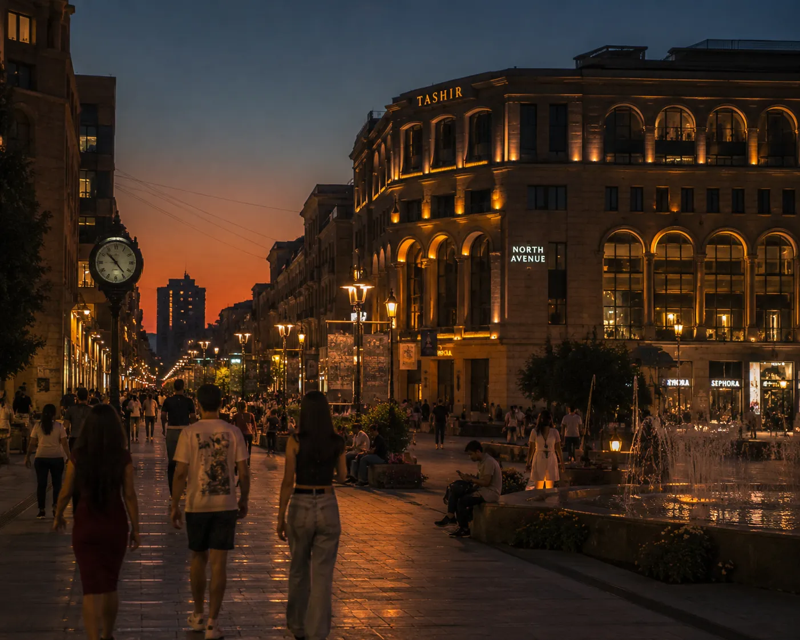
Քաղաքը փոխում է իր ռիթմը․ քայլերը դանդաղում են, խոսքը՝ մեղմանում, և քաղաքի աղմուկը դառնում է ավելի հանգիստ հանդարտ։ Քաղաքային լույսերի ներքո սկսվում է գիշերային կյանքը՝ սրճարաններում, ակումբներում, փողոցներում, հրապարակներում՝ ամենուրեք, որտեղ կա լույս և երաժշտություն…
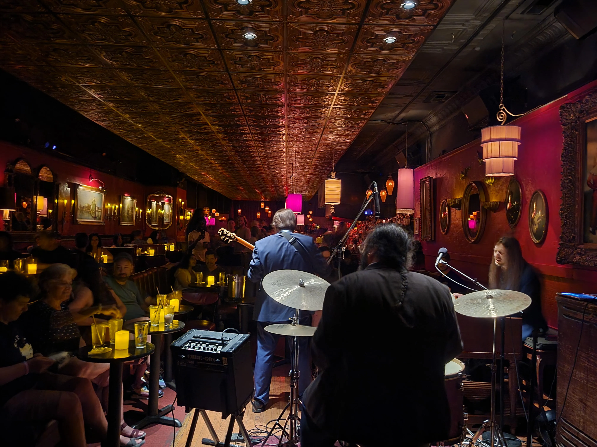
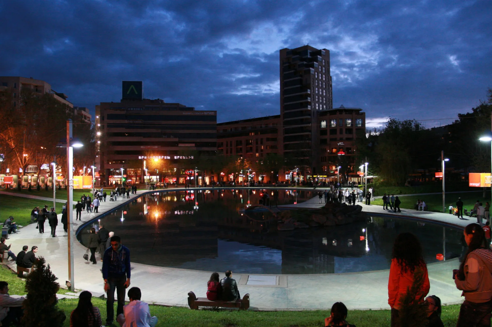
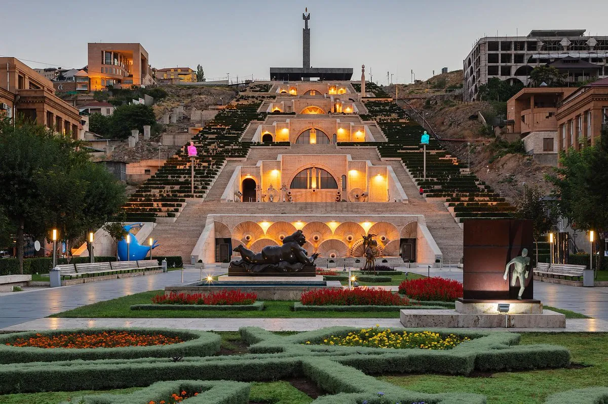
Հանրապետության հրապարակում երգող շատրվանների շուրջ հավաքվում են մարդիկ, Կասկադի աստիճանները լցվում են ստվերներով, Կարապի լիճը՝ հանդարտ շարժով, իսկ Հյուսիսային պողոտան դառնում է կենդանի հոսք։
Երևանը շնչում է այնպես, ասես յուրաքանչյուր երեկո իր պատմությունն է գրում՝ սպասելով հաջորդ լուսաբացին։
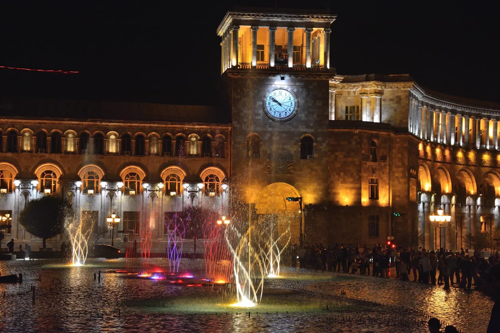
ԲՆՈՒԹՅՈՒՆ
Երևանը գտնվում է Արարատյան դաշտավայրի հյուսիս-արևելյան հատվածում՝ Հրազդան գետի ափերին, ծովի մակերևույթից 865–1390 մետր բարձրության վրա։ Քաղաքը տեղադրված է բարեխառն գոտու ցամաքային հատվածում՝ երեք կողմերից լեռներով և լեռնաշղթաներով շրջապատված բարձրադիր պլատոյի վրա, ինչը նրան հաղորդում է բացառիկ աշխարհագրական դիրք և տպավորիչ համայնապատկերներ։
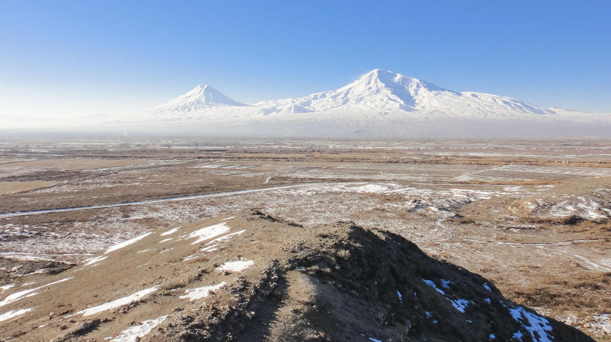
Քաղաքի հյուսիս-արևմուտքում վեր է խոյանում քառագագաթ Արագածը, հյուսիսում տարածվում է Քանաքեռի սարահարթը, արևելքում՝ Սևանա լիճը շրջապատող Գեղամա լեռնաշղթան, իսկ դեպի արևմուտք և հարավ բացվում է Արարատյան դաշտը՝ Արարատ լեռան գագաթներով:
Երևանի ու Սևանա լճի միջև ընկած տարածքում լեռները վերածվում են բարձրադիր սարահարթերի՝ հասնելով մինչև 3600 մետր բարձրության։Այդ լեռնաշխարհից դեպի քաղաք իջնող լանջերը ձևավորում են յուրահատուկ ռելիեֆ և բնական միջավայր։
Երևանը շրջապատում են նաև Արա լեռը, որը պարզորոշ տեսանելի է մի քանի վարչական շրջանների տարածքներից, արևելքում Գառնիի բարձունքներնհ են, հեռվում՝ Հատիսը։ Լեռնային շրջապատը, բարձրադիր դիրքը և Արարատյան դաշտի բաց տեսարանները Երևանին հաղորդում են յուրահատուկ բնական մթնոլորտ: Շրջապատված լեռներով և ողողված՝ արևի լույսով՝ Երևանը միավորում է քարքարոտ լեռնաշխարհի խստությունն ու Արարատյան դաշտի ջերմ գույները՝ ստեղծելով ինքնատիպ ու հիշվող բնապատկեր:
Լանդշաֆտային գոտիներ

Կլիմայական գոտիներ
Երևանը բնութագրվում է չոր, ցամաքային կլիմայով՝ տարվա եղանակների հստակ արտահայտված տարբերություններով։ Ամառները տաք և արևոտ են, իսկ ձմեռները՝ համեմատաբար մեղմ: Տեղումների միջին տարեկան քանակը կազմում է 300–350 մմ: Հատուկ է վերընթաց գոտիականությունը: Քաղաքի տարածքը, ծովի մակարդակից տարբեր բարձրություններով պայմանավորված ( ~ 900 -1300 մ), բաժանվում է 2 կլիմայական գոտիների.
Չոր, խիստ ցամաքային կլիմա (Ցածրադիր գոտի) – ▲~800–900մ, երբեմն մինչև 1000 մ ԲԾՄ (Կենտրոնական և հարավային ցածրադիր հատվածներ)
Չափավոր ցամաքային կլիմա (Բարձրադիր գոտի) –▲~1050-1300 -ից մինչև 1400 մ ԲԾՄ (Հյուսիսային և հս-արլյ բարձրադիր հատվածներ)
Հող և բուսականություն
Երևան քաղաքի հողածածկույթը բազմազան է. որտեղ հանդիպում են գորշից մինչև շագանակագույն հողեր: Երևանի տարածքում գերակշռում են մոխրագույն, լեռնաշագանակագույն հողերը, իսկ ցածրադիր մասերում՝ ոռոգելի կավավազային հողերը, որոնք նպաստավոր են քաղաքային կանաչապատման և գյուղատնտեսական պարտեզների համար։
Երևանում լայն տարածում ունեն այգիները, պուրակները և արհեստական կանաչ գոտիները։ Քաղաքի կանաչապատման կարևոր հատվածներն են՝ Հրազդանի կիրճը, Ծիծեռնակաբերդի զբոսայգին և բազմաթիվ քաղաքային պուրակներ։
Քաղաքի շրջակայքում տարածված են ծիրանենիների և խաղողի այգիները, որոնք բնորոշ են Արարատյան դաշտավայրին։
Հատուկ պահպանվող տարածքներ (ԲՀՊՏ)
Երևանում և դրան անմիջապես հարող տարածքներում գործում են մի քանի կարևոր Բնության Հատուկ Պահպանվող Տարածքներ (ԲՀՊՏ)։ Դրանք ներառում են համաշխարհային նշանակության արգելավայրեր, անտառպարկեր և բնության հուշարձաններ, որոնք ունեն գիտական, էկոլոգիական և ռեկրեացիոն մեծ արժեք
Երևանի կանաչ գոտու մի շարք տարածքներ, այդ թվում՝ Հաղթանակի զբոսայգին և այլ քաղաքային պուրակներ, նույնպես ունեն պահպանական և բնապահպանական հատուկ կարգավիճակ։
Ռելիեֆ
Երևանի ռելիեֆը ձևավորվել է հրաբխային գործընթացների, լավային հոսքերի և գետային էրոզիայի ազդեցությամբ, ինչի արդյունքում քաղաքը ստացել է բլրոտ ու աստիճանաձև տեսք։ Հայաստանի մայրաքաղաքը հարմարավետ տեղավորված է Արարատյան դաշտի պայտաձև գոգավորությունում՝ շրջապատված հրաբխային ծագում ունեցող բարձունքներով ու լեռնազանգվածներով։ Քաղաքը, որն ասես, տեղավորված լինի մեծ թասի մեջ, ուղղված է դեպի հայ ժողովրդի խորհրդանշական Արարատը, որ մշտապես տեսանելի է Երևանի համայնապատկերում։ 5165 մետր բարձրությամբ լեռը ոչ միայն բնական ֆոն է քաղաքի համար, այլև հայկական ինքնության կարևորագույն խորհրդանիշներից մեկը։
Քաղաքի բնական գլխավոր առանցքը Հրազդանի կիրճն է, որը հյուսիսից հարավ բաժանում է Երևանը։ Հազարավոր տարիների ընթացքում գետը ձևավորել է գեղատեսիլ ու խոր կիրճ՝ Հրազդանի ձորը, որն ունեցել է կարևոր բնական և տնտեսական նշանակություն: Կիրճի խորությունը տեղ-տեղ հասնում է տասնյակ մետրերի՝ ստեղծելով ժայռոտ լանջեր, կանաչ գոտիներ և բնական տեսադաշտեր։
Ներկայիս Երևանի տարածքում առանձնանում են տարբեր բարձունքներ և սարավանդներ՝
Հրաբխային պրոցեսների արգասիք են Կոնդի, Քանաքեռի և Նորքի բարձունքները, որոնց միջև ձևավորվել է հին Երևանը։
Ռելիեֆի բազմազանության շնորհիվ Երևանի տարբեր թաղամասեր ունեն իրարից զգալիորեն տարբերվող բնական միջավայր։ Կենտրոնն ու Արաբկիրը ձևավորվել են բլրալանջային տարածքներում, Աջափնյակը բարձրադիր սարավանդային գոտում է, իսկ Դավթաշենը տարածվում է Հրազդանի աջափնյա բարձրադիր հատվածում։
Քաղաքի ամենացածր հատվածները գտնվում են հարավային գոտիներում՝ Շենգավիթ և Մալաթիա-Սեբաստիա վարչական շրջաններում, որոնք մոտ են Արարատյան դաշտին։
Ամենաբարձր դիրքերն ունեն Նորք-Մարաշ, Ավան և Նոր Նորք վարչական շրջանները,
Երևանի ամենացածր կետը (մոտ 850–860 մ ԲԾՄ)
Երևանի ամենաբարձր կետը (մոտ 1390–1450 մ ԲԾՄ )
Ջրային համակարգ
Երևանի բնաշխարհի ջրային ավազանը գլխավորապես ձևավորում է Արաքսի վտակ՝ Հրազդան գետը, որը հատում է քաղաքը հյուսիսից հարավ։ Քաղաքը փռված է Հրազդանի ափերին:
Ջրային ռեսուրսներ
Գետեր
Երևանում կան նաև մի քանի փոքր գետեր, առուներ և սելավատարներ, որոնք հիմնականում սկիզբ են առնում շրջակա բարձունքներից։ Դրանցից են Դալմայի և Քանաքեռի հին առուներն ու ոռոգիչ ջրանցքները, որոնցից շատերը ժամանակի ընթացքում վերցվել են փակ կամ արհեստական հուների մեջ։ Այս ջրահոսքերն առանձնապես ջրառատ չեն, սակայն պատմականորեն մեծ դեր են ունեցել Երևանի այգիների, խաղողի այգիների և ոռոգման համակարգերի ձևավորման մեջ։ Շատ հատվածներում դրանք այսօր անցնում են ստորգետնյա կամ բետոնապատ հուներով։
Քաղաքային լճեր և լճակներ
Երևան քաղաքում բնական խոշոր լճեր չկան, սակայն այստեղ ձևավորվել է արհեստական լճերի և լճակների յուրահատուկ համակարգ, որը կարևոր դեր ունի քաղաքի միկրոկլիմայի, կանաչապատման և հանգստի գոտիների ձևավորման գործում։ Դրանց մեծ մասը սնվում է արտեզյան ջրերով, Հրազդան գետից կամ քաղաքային ջրային համակարգերից։
Քաղաքային լճերն օգտագործվում են՝
Ջրամբարներ
Երևան քաղաքում բնական ջրային պաշարները լրացվում են արհեստական լճերով և ջրամբարներով, որոնք ստեղծվել են ոռոգման, էներգետիկ, ռեկրեացիոն և քաղաքային միջավայրի բարելավման նպատակներով։ Դրանք կարևոր դեր ունեն նաև քաղաքի միկրոկլիմայի ձևավորման մեջ։
Կլիմայական և ռեկրեացիոն ռեսուրսներ
Երևանը գտնվում է Արարատյան դաշտի հյուսիս-արևելյան հատվածում։ Քաղաքին բնորոշ են արևային օրերի մեծ քանակը, երկարատև տաք եղանակները և համեմատաբար չոր կլիման, ինչը նպաստավոր պայմաններ է ստեղծում արևային էներգետիկայի զարգացման, հանգստի կազմակերպման համար։ Քաղաքաշինության և կանաչապատման արդյունքում Երևանում լայնորեն տարածված են նաև մարդածին (անթրոպոգեն) լանդշաֆտները՝ պուրակներ, այգիներ և անտառային գոտիներ (Հրազդանի կիրճը, Ծիծեռնակաբերդի զբոսայգին, Երևանյան լիճը), որոնք արհեստական ոռոգման միջոցով փոխում են տեղանքի միկրոլանդշաֆտային պատկերը: Ջրային համակարգերը լրացնում են նաև քաղաքի ջրային լանդշաֆտը՝ մեղմելով չոր կլիման և դարձնելով Երևանը ավելի կանաչ ու ռեկրեացիոն միջավայր ունեցող մայրաքաղաք։ Դրանք կարևոր դեր ունեն նաև Երևանի բնապատկերի ձևավորման մեջ։
ՏՆՏԵՍՈՒԹՅՈՒՆ
Երևանը Հայաստանի Հանրապետության գլխավոր տնտեսական, արդյունաբերական, ֆինանսական և ծառայությունների կենտրոնն է։ Մայրաքաղաքում բնակվում է շուրջ 1,084,100 մարդ, ինչը կազմում է երկրի բնակչության մոտ 36,6 %-ը։ Այստեղ է կենտրոնացած հանրապետության տնտեսական և արդյունաբերական ներուժի զգալի մասը։
Երևանը երկրի խոշորագույն արդյունաբերական և տեխնոլոգիական կենտրոնն է։ Այստեղ կենտրոնացած են բազմաթիվ արտադրական ձեռնարկություններ, գիտատեխնիկական կազմակերպություններ և նորարարական ընկերություններ։ Երևանն ունի բազմաճյուղ տնտեսություն, որն ընդգրկում է սննդի արտադրությունից և վերամշակող արդյունաբերությունից մինչև բարձր տեխնոլոգիաներն ու տեղեկատվական համակարգերը։
Արդյունաբերական զարգացում
Խորհրդային տարիներին Երևանը եղել է ԽՍՀՄ խոշոր արդյունաբերական կենտրոններից մեկը։ Քաղաքում գործել են շուրջ 200 խոշոր և միջին գործարաններ ու արտադրական համալիրներ՝ մեքենաշինության, հաստոցաշինության, քիմիական, թեթև և սննդի արդյունաբերության ոլորտներում։
Առավել հայտնի ձեռնարկություններից էին՝
Խորհրդային ժամանակաշրջանում Երևանում զարգացան նաև բնական հյութերի, պահածոների, հրուշակեղենի և սննդի այլ արտադրությունները։ Քաղաքի գինու և կոնյակի գործարանների պատմությունը սկիզբ է առնում դեռևս 19-րդ դարից։ Հատկապես մեծ ճանաչում ձեռք բերեց Երևանի Արարատ կոնյակի գործարանը, որի շնորհիվ հայկական կոնյակը հայտնի դարձավ ամբողջ աշխարհում
Ժամանակակից տնտեսություն
Այսօր Երևանում գործում են սննդի, հրուշակեղենի, պահածոների, խմիչքի և ծխախոտի բազմաթիվ գործարաններ, ինչպես նաև հազարավոր փոքր և միջին ձեռնարկություններ։ Միաժամանակ, խորհրդային շրջանի մի շարք խոշոր արդյունաբերական համալիրներ, այդ թվում՝ «Նաիրիտը» և մեքենաշինական գործարանների մի մասը, ներկայումս աշխատում են սահմանափակ հզորությամբ։
Վերջին տարիներին հատկապես արագ զարգանում են՝
2016 թվականի տվյալներով՝ Երևանի տնտեսության տեսակարար կշիռը
հանրապետության ՀՆԱ-ի կառուցվածքում կազմել է շուրջ 52 %։
Մայրաքաղաքին բաժին է ընկել՝
Վերջին տարիներին հատկապես արագ զարգանում են՝
Երևանի արդյունաբերության հիմնական ճյուղերն են՝
Սննդամթերքի և խմիչքների արտադրություն
Սննդամթերքի և խմիչքների արտադրությունը Երևանի արդյունաբերության առաջատար և խոշորագույն ճյուղերից է։ Ոլորտը ներառում է ալկոհոլային խմիչքների (կոնյակ, գինի, հանքային ջրեր), կաթնամթերքի, մսամթերքի, հրուշակեղենի, պահածոների և այլ սննդամթերքի արտադրություն՝ ինչպես ներքին շուկայի, այնպես էլ արտահանման համար։
Ալկոհոլային խմիչքների արտադրություն
Երևանը հայտնի է ալկոհոլային խմիչքների՝ կոնյակի, գինու և օղու արտադրության գիգանտներով՝
Հանքային ջրեր և ոչ ալկոհոլային խմիչքներ
Երևանը Հայաստանի խմիչքների արդյունաբերության գլխավոր կենտրոնն է, որտեղ կենտրոնացված են բազմաթիվ ընկերությունների վարչական գրասենյակները, պահեստներն ու բաշխիչ ցանցերը։ Թեև հանքային ջրերի շշալցման գործարանները հիմնականում տեղակայված են բնական աղբյուրների մոտ, մայրաքաղաքը հանդիսանում է դրանց իրացման և կառավարման հիմնական հանգույցը։ Դրանց թվում են գազավորված հանքային ջրերը և բնական աղբյուրի ոչ գազավորված ջրերը:
Հայաստանի ամենահայտնի գազավորված հանքային ջրերից են. «Ջերմուկ»-ը, «Բջնի»-ն, «Արզնի»-ն, «Դիլիջան»-ը, «Արարատ»-ը, իսկ աղբյուրի ոչ գազավորված ջրերն են, «Բյուրեղ»-ը , «Ապարան»-ը «Գառնի»-ն և «Նոյ»-ը։
Ոչ ալկոհոլային խմիչքներ
Երևանում զարգացած է ոչ ալկոհոլային խմիչքների արտադրությունը, որը ներառում է գազավորված զովացուցիչ ըմպելիքներ, հյութեր, նեկտարներ, սառը թեյեր, էներգետիկ և ավանդական կաթնային խմիչքներ։
Ոլորտի առաջատար արտադրողներից են «Կոկա-Կոլա ՀԲՔ Արմենիա»-ն, «Գրանդ Քենդի»-ն, «Սիս Նատուրալ»-ը, «Նոյան»-ը և այլ ընկերություններ։ Դրանք արտադրում են ինչպես միջազգային ապրանքանիշերի, այնպես էլ հայկական լիմոնադների, բնական հյութերի, նեկտարների, էներգետիկ խմիչքների և թանի լայն տեսականի։ «Ջերմուկ»-ը, «Բջնի»-ն, «Արզնի»-ն, «Դիլիջան»-ը, «Արարատ»-ը, իսկ աղբյուրի ոչ գազավորված ջրերն են, «Բյուրեղ»-ը , «Ապարան»-ը «Գառնի»-ն և «Նոյ»-ը։
Արտադրության զգալի մասը հիմնված է հայկական մրգերի և բնական հումքի վրա, իսկ մի շարք ապրանքատեսակներ արտահանվում են միջազգային շուկաներ։
Սննդամթերքի արտադրություն
Ոլորտի կարևոր ուղղություններից են նաև հրուշակեղենի, կաթնամթերքի, մսամթերքի և պահածոների արտադրությունը։ Արտադրության հիմքը Հայաստանի գյուղատնտեսական հումքն է, իսկ պատրաստի արտադրանքի զգալի մասը արտահանվում է արտասահմանյան շուկաներ։
Քաղցրավենիք և հրուշակեղեն. Տեղական շուկայի առաջատարը և խոշորագույն արտադրողը «Գրանդ Քենդի» ընկերությունն է, որն արտադրում է շոկոլադ, թխվածքաբլիթներ, պաղպաղակ և այլ քաղցրավենիքներ։
Կաթնամթերք. Մայրաքաղաքում և դրա հարակից տարածքներում գործում են բազմաթիվ կաթնամթերքի գործարաններ, որոնք արտադրում են պանիր, մածուն, թթվասեր և կաթ (օրինակ՝ «Դուստր Մարիաննա», «Աշտարակ Կաթ», «Թամարա»)։
Մսամթերք. Լայնորեն զարգացած է երշիկեղենի և պահածոյացված մսի արտադրությունը («Աթենք», «Մուշ», «Բարի Սամարացի» և այլք)։
Պահածոներ և մրգային վերամշակում. Հայկական մրգերի, բանջարեղենի պահածոների և մուրաբաների արտադրությամբ զբաղվում են այնպիսի ընկերություններ, ինչպիսիք են Երևանի պահածոների գործարանը, «Armatfood»-ը »)
Սննդարդյունաբերական ձեռնարկությունների մեծ մասը կենտրոնացված է Երևանի արդյունաբերական գոտիներում՝ հատկապես Շենգավիթ և Էրեբունի վարչական շրջաններում։
Ոլորտի առանձնահատկությունները
Թեթև արդյունաբերություն (Տեքստիլ և կարի արտադրություն)
Երևանի թեթև արդյունաբերությունը հիմնականում մասնագիտացած է տեքստիլի, հագուստի և տրիկոտաժի արտադրության մեջ և մեծ մասամբ աշխատում է արտասահմանյան պատվերների հիման վրա։ Մայրաքաղաքում գործում են ինչպես խոշոր, այնպես էլ միջին ու փոքր ձեռնարկություններ, ինչպես նաև ոլորտի մասնագիտական ուսումնական հաստատություններ։ Հայաստանի խոշորագույն կարի ֆաբրիկաներից է Ալեքս Տեքստիլ» (Alex Textile) , որն արտադրում է մանկական, կանացի և տղամարդու հագուստ։ Նորաձևության կենտրոններից է «Ատեքս» (Atex) ընյյյերությունը։
Քիմիական արդյունաբերություն
Երևանում քիմիական արդյունաբերությունը ձևավորվել է խորհրդային շրջանում՝ որպես ծանր և միջին արդյունաբերության կարևոր ճյուղերից մեկը։ Այն ընդգրկել է ռետինե և կաուչուկի արտադրությունից մինչև կենցաղային քիմիա և տեխնիկական նյութեր։ Այս ոլորտի ամենահայտնի ձեռնարկություններից էր «Նաիրիտ» քիմիական կոմբինատը, որը երկար տարիներ համարվել է տարածաշրջանի խոշոր արտադրական կենտրոններից մեկը։ Չնայած ներկայումս այն չի գործում նախկին ծավալներով, նրա դերը Երևանի արդյունաբերական զարգացման պատմության մեջ նշանակալի է։
Ոլորտը աստիճանաբար վերակազմավորվում է՝ անցնելով ավելի ճկուն և մասնագիտացված արտադրության մոդելի, որը միտված է ներքին շուկայի պահանջների բավարարմանը և որոշ դեպքերում նաև արտահանմանը Այսօր Երևանի քիմիական արդյունաբերությունը հիմնականում ներկայացված է փոքր և միջին ձեռնարկություններով, որոնք զբաղվում են՝
Դեղագործական արդյունաբերություն
Երևանը Հայաստանի դեղագործական արդյունաբերության և կրթության գլխավոր կենտրոնն է, որտեղ համակցված են տեղական արտադրությունը, դեղերի ներմուծումը և դեղատնային լայն ցանցը։
Քաղաքում գործում են մի շարք դեղարտադրող և մեծածախ ընկերություններ, ինչպես նաև դեղերի շրջանառության ոլորտում մասնագիտացված կազմակերպություններ։ Առաջատարներից են «Լիկվոր» և «Էսկո-Ֆարմ» ընկերությունները, ինչպես նաև «Վագա Ֆարմ»-ը, որը զբաղվում է ներմուծմամբ և մեծածախ մատակարարմամբ։
Ոլորտը կարևոր դեր ունի նաև կրթության և գիտության մեջ՝ ապահովելով դեղագործական մասնագետների պատրաստումը և ոլորտի շարունակական զարգացումը։
Մետաղագործություն և մետաղամշակում
Երևանը Հայաստանի դեղագործական արդյունաբերության և կրթության գլխավոր կենտրոնն է, որտեղ համակցված են տեղական արտադրությունը, դեղերի ներմուծումը և դեղատնային լայն ցանցը։
Շինանյութերի և երկաթբետոնե արտադրություն
Երևանը հայտնի է ոչ մետաղային հանքային ռեսուրսների առատությամբ։ Քաղաքի տարածքն ու անմիջական շրջակայքը հարուստ են շինանյութերի խոշոր պաշարներով, որոնք կարևոր դեր են ունեցել Երևանի կառուցապատման և արդյունաբերության զարգացման մեջ։
Երևանում շինանյութերի, հատկապես բետոնի և երկաթբետոնե կոնստրուկցիաների արտադրությունը ներկայացված է մի շարք տեղական ձեռնարկություններով, որոնք ապահովում են անմիջական մատակարարում շինարարական նախագծերին։
Քաղաքում գործում են բետոնի և երկաթբետոնե արտադրության մի քանի խոշոր ընկերություններ, այդ թվում՝ «NLS Construction», «Բաղրամյանշին», «HSKA» և «Երկաթբետոն» ԲԲԸ։ Այս ընկերությունները արտադրում են տարբեր շինարարական տարրեր՝ պանելներ, աստիճաններ, ծածկեր, դիտահորեր և այլ կառուցվածքային բաղադրիչներ։
Գործում են նաև շինանյութերի և բնական քարի արտադրությամբ զբաղվող կազմակերպություններ, ինչպիսիք են «ՎիԷս Շին Գրուպ»-ը և «Երևանյան Բազալտ»-ը, որոնք մատակարարում են ինչպես արդյունաբերական, այնպես էլ դեկորատիվ նյութեր։ Ոլորտը համալրված է շինարարական սարքավորումների արտադրությամբ և սպասարկմամբ զբաղվող ընկերություններով, որոնք ապահովում են արտադրական գործընթացի տեխնիկական հիմքը։
Տեղեկատվական տեխնոլոգիաներ և բարձր տեխնոլոգիական արտադրություն
Երևանը Հայաստանի տեղեկատվական տեխնոլոգիաների (ՏՏ) և բարձր տեխնոլոգիական արտադրության գլխավոր կենտրոնն է, որտեղ ձևավորվել է արագ զարգացող և արտահանման ուղղվածություն ունեցող ժամանակակից ոլորտ։Քաղաքում գործում են բազմաթիվ ՏՏ ընկերություններ, որոնք զբաղվում են ծրագրային ապահովման մշակմամբ, արհեստական բանականության լուծումներով, կիբեռանվտանգությամբ, տվյալների վերլուծությամբ և ֆինանսական տեխնոլոգիաներով (FinTech)։
Ոլորտը առանձնանում է բարձր որակավորմամբ մասնագետներով և միջազգային շուկաների հետ ակտիվ համագործակցությամբ։ Երևանը նաև բարձր տեխնոլոգիական արտադրության զարգացման կենտրոն է, որտեղ իրականացվում է էլեկտրոնիկայի, ինժեներական համակարգերի, ավտոմատացման լուծումների և ռազմական-տեխնիկական բաղադրիչների մշակում ու արտադրություն։
ՏՏ և բարձր տեխնոլոգիական ընկերություններ
Միջազգային ընկերություններ (կենտրոններ Երևանում)
Հայկական ստարտափներ և տեխնոլոգիական ընկերություններ
Ինժեներական և բարձր տեխնոլոգիական լուծումներ
Ոլորտի զարգացմանը մեծապես նպաստում են կրթական և գիտահետազոտական հաստատությունները, որոնք ապահովում են նորարարական գաղափարների և որակյալ կադրերի հոսք։ Երևանի ամենահայտնի կրթական և տեխնոլոգիական կենտրոններից է Թումո Ստեղծարար Տեխնոլոգիաների Կենտրոնը (TUMO), որը հիմնադրվել է 2011 թվականին և գտնվում է մայրաքաղաքում՝ որպես նորարարական կրթության առաջատար հարթակ։
Այն անվճար արտադպրոցական կրթական կենտրոն է՝ նախատեսված հիմնականում 12–18 տարեկան պատանիների համար, որտեղ ուսուցումը իրականացվում է ինքնուսուցման, աշխատարանների (workshops) և նախագծային լաբորատորիաների միջոցով։ Թումոն կենտրոնանում է ստեղծարար և տեխնոլոգիական ուղղությունների վրա՝ ներառելով՝ անիմացիա, ծրագրավորում. խաղերի ստեղծում,դիզայն և ռոբոտատեխնիկա և ֆիլմարտադրություն:
Երևանի Թումոն համարվում է կազմակերպության գլխավոր և առաջին կենտրոնը, որը դարձել է մոդելային օրինակ՝ հետագայում Հայաստանում և արտերկրում նման կենտրոնների բացման համար։ Այսօր Թումոն ոչ միայն կրթական կենտրոն է, այլ նաև Հայաստանի ՏՏ և ստեղծարար արդյունաբերության կարևոր զարգացման հարթակ։
ԿՐԹՈՒԹՅՈՒՆ / ՍՊՈՐՏ
Երևանը Հայաստանի գիտա-կրթական, մշակութային և մարզական գլխավոր կենտրոնն է՝ ձևավորելով երկրի մտավոր ու ստեղծագործական ներուժի կարևոր մասը՝ հայկական գիտության, կրթության, մշակույթի և սպորտի կարևորագույն օջախը։
Երևանում է կենտրոնացած Հայաստանի գիտական ներուժի հիմնական մասը։ Գիտական կյանքի գլխավոր կենտրոնը Հայաստանի գիտությունների ազգային ակադեմիան է՝ իր բազմաթիվ գիտահետազոտական ինստիտուտներով։
Մայրաքաղաքում հատկապես զարգացած են՝
Գիտական կադրերի պատրաստման և հետազոտական գործունեության մեջ կարևոր դեր ունեն նաև միջազգային գիտակրթական կենտրոնները, լաբորատորիաներն ու նորարարական հարթակները։
Միջնակարգ և բարձրագույն կրթություն
Այսօր Երևանում գործում են հարյուրավոր կրթական հաստատություններ՝ մանկապարտեզներից և հանրակրթական դպրոցներից մինչև համալսարաններ ու գիտահետազոտական կենտրոններ։ Երևանի ենթակայությամբ գործում է շուրջ 160 կրթական հաստատություն, այդ թվում՝ 145 հիմնական դպրոց, 11 միջնակարգ դպրոց, կույրերի երեկոյան 1 դպրոց (6–12-րդ դասարաններ), 2 հատուկ (N 2 և N 6) դպրոց (մտավոր թերզարգացում ունեցող երեխաների համար), 1 հատուկ (N 8) կրթահամալիր՝ խոսքի և մտավոր զարգացման խնդիրներ ունեցող երեխաների համար:
Երևանը հայտնի է նաև երաժշտական և մշակութային հարուստ կրթական ավանդույթներով: Քաղաքում գործում են տասնյակ երաժշտական և արվեստի դպրոցներ, մանկապատանեկան ստեղծագործական կենտրոններ, նվագախմբեր և երգչախմբեր, որոնց սաներից կազմավորվել է «Երևան» պատանեկան սիմֆոնիկ նվագախումբը։
Գործում են նաև «Հայաստանի փոքրիկ երգիչներ» երգչախումբը, Յ. Բախշյանի անվան մանկական ֆիլհարմոնիան, «Երևան» փողային նվագախումբը, մանկապատանեկան ստեղծագործության կենտրոնը և այլ մշակութային կառույցներ։
Մայրաքաղաքի բոլոր վարչական շրջաններում գործում են գեղարվեստական կրթության և գեղագիտական դաստիարակության կենտրոններ, որոնց սաները մասնակցում են քաղաքային, հանրապետական և միջազգային մրցույթների ու փառատոնների։ Գործում են նաև պարարվեստի մասնագիտացված դպրոցներ։
Մայրաքաղաքի գլխավոր բուհերը
Երևանում են կենտրոնացած Հայաստանի բարձրագույն ուսումնական հաստատությունների մեծ մասը։ Կարևորագույն բուհերից են՝
Գիտակրթական արժեքներ և առանձնահատկություններ
ՍՊՈՐՏ
Երևանում սպորտային կյանքը ևս ակտիվ է՝ զարգացած մարզադպրոցների, ֆիթնես ակումբների և մարզական միջոցառումների լայն ցանցով։ Քաղաքում մեծ ուշադրություն է դարձվում ինչպես պրոֆեսիոնալ, այնպես էլ մասսայական ու մանկապատանեկան սպորտի զարգացմանը։ Մայրաքաղաքի բոլոր վարչական շրջաններում գործում են սպորտի տարբեր ձևերի մարզադպրոցներ:
Երևանի սպորտային և մարզական կյանքի ենթակառուցվածքները
Մասնագիտացված և պետական մարզական կառույցներ են.
Կարեն Դեմիրճյանի անվան մարզահամերգային համալիր -- Երևանի ամենամեծ մարզահամերգային համալիրն է, բաղկացած է 2 մեծ սրահներից՝ սպորտային և համերգային։ Հիմնական դահլիճն ունի 6000 նստատեղ, որն օգտագործվում է սպորտային միջոցառումների և համերգների համար, Մարզասրահն ունի 2000 նստատեղ:
Ավանի ֆուտբոլի ակադեմիա -- Ունի բազմաթիվ բնական և արհեստական խոտածածկով ֆուտբոլի դաշտեր, փակ մարզադահլիճ, լողավազան և թենիսի կորտեր։ Հարմար է թիմային մարզաձևերի և ֆուտբոլի համար։ Mika Sports Arena --- Մասնագիտացված է խաղային մարզաձևերի (բասկետբոլ, ֆուտզալ, հանդբոլ) մրցումների և պարապմունքների համար:
Մասնավոր մարզասրահներ և ֆիթնես ակումբներ
Hills Sport Complex -- Ներառում է ժամանակակից մարզասրահ, փակ լողավազան, շոգեբաղնիք, ֆիթնես և խաղահրապարակներ։
Aquatek Sports Complex — Բազմաֆունկցիոնալ սպորտային համալիր՝ միջազգային չափանիշներին համապատասխանող լողավազաններով, մაրզասրհներով և ջրային կենտրոնով։
Multi Wellness Center - Առաջարկում է ֆիթնեսի և մարզումների լայն ընտրանի, ինչպես նաև փակ ու բաց լողավազաններ և սպա կենտրոն։
Grand Sport - Ունի միջազգային չափանիշներին համապատասխանող հսկայական մարզադահլիճներ և լողավազաններ:
Gold's Gym — Բարձրակարգ սպորտային համալիր՝ միջազգային չափանիշներին համապատասխանող մարզասրահներով, լողավազաններով և ֆիթնես ծրագրերով։
Cross Sport Complex (Sports & Wellness Center) - Մարզահամալիր և առողջարարական ֆիթնես կենտրոն - Յոգա - Ջրային աէրոբիկա - Պիլատես -Սթեփ մարզում։
Reebok Sports Club Armenia — Տարածաշրջանի խոշորագույն և միջազգային չափանիշներին համապատասխանող մարզահամալիրը: Ներառում է ժամանակակից մարզասրահներ, լողավազան, սպա կենտրոն, յուրահատուկ սերֆինգի հարթակ և սաունաներ:
Հայաստանի ազգային օլիմպիական կոմիտե
Մասսայական սպորտ և վազք
Երևանում զարգանում են բացօթյա մարզահրապարակները, վազքուղիները, հեծանվային և ակտիվ հանգստի գոտիները, որոնք նպաստում են առողջ ապրելակերպի տարածմանը բնակիչների շրջանում։
Մասսայական հեծանվաշերթեր և տոնական վազքեր
Հեծանվային միջոցառումների հիմնական ձևաչափերն են.
Հեծանվասպորտի սիրողական մրցաշար և շերթ (Հեծանվորդի միջազգային օր) ----- Ամեն տարի հունիսի սկզբին Երևանի քաղաքապետարանը կազմակերպում է մեծ սիրողական մրցավազք։ Կենտրոնական փողոցները (Մաշտոցի պողոտա, Կորյուն, Գրիգոր Լուսավորիչ) փակվում են մեքենաների համար, և հարյուրավոր սիրողական հեծանվորդներ միասին անցնում են հատուկ երթուղի։
Պրոֆեսիոնալ և բաց առաջնություններ
ՄՇԱԿՈՒՅԹ
Երևանը Հայաստանի մշակութային կյանքի գլխավոր կենտրոնն է՝ ձևավորված հազարամյակների պատմության, քաղաքային մշակույթի և ազգային ստեղծագործական ավանդույթների հիմքի վրա։ Երևանը համադրում է պատմական ժառանգությունը և ժամանակակից արվեստը՝ պահպանելով իր դերը որպես Հայաստանի մշակութային սիրտ:
Երևանը աշխարհի հնագույն շարունակաբար բնակեցված քաղաքներից է (հիմնադրվել է մ.թ.ա. 782 թ.)։ Քաղաքի պատմության և մշակույթի անշարժ հուշարձանների ցանկը ներառում է ավելի քան 400 պահպանվող օբյեկտներ՝ սկսած ուրարտական ժամանակաշրջանից մինչև խորհրդային մոդեռնիզմ։ Մայրաքաղաքի բազմաշերտ մշակութային համակարգը ձևավորում է ազգային ինքնության կարևոր հիմքերից մեկը։ Երևանում գործում են բազմաթիվ թանգարաններ, պատկերասրահներ, թատրոններ, մշակութային կենտրոններ և միջազգային փառատոններ։
Մշակութային ժառանգություն
Երևանի տարածքում հաշվառված են շուրջ 401 պատմության և մշակույթի հուշարձաններ, որոնցից 288-ը պետական են, 113-ը՝ համայնքային։ Հուշարձանների ցանկը ներառում է՝
Այս բազմաշերտ ժառանգությունը վկայում է Երևանի երկարատև պատմական զարգացման և քաղաքային մշակույթի խոր արմատների մասին։
Մշակութային հաստատություններ
Երևանը հարուստ է մշակութային հաստատություններով՝ թանգարաններով, գրադարաններով, պատկերասրահներով, համերգասրահներով և թատրոններով։ Երևանի քաղաքապետարանի ենթակայությամբ գործում են 72 մշակութային կազմակերպություններ, որոնց թվում՝
Թանգարաններ
Երևանը Հայաստանի գլխավոր թանգարանային կենտրոնն է, որտեղ գործում են պատմական, արվեստի, գրականության, գիտության և հուշային տասնյակ թանգարաններ։ Դրանք ներկայացնում են Հայաստանի բազմադարյա պատմությունը, մշակույթը, արվեստն ու նշանավոր գործիչների ժառանգությունը։ Երևանի թանգարանները ոչ միայն պահպանում են ազգային ժառանգությունը, այլև պարբերաբար կազմակերպում են միջազգային ցուցահանդեսներ, կրթական ծրագրեր և մշակութային միջոցառումներ:
Էրեբունի պատմահնագիտական արգելոց-թանգարան
Երևանի մշակութային ինքնության կարևորագույն կենտրոն է, որը ներկայացնում է մ.թ.ա. 782 թվականին հիմնադրված Էրեբունի-Երևան քաղաքի պատմությունը։ Այստեղ պահվում են ուրարտական ժամանակաշրջանի արժեքավոր գտածոներ, այդ թվում՝ Արգիշտի I-ի սեպագիր արձանագրությունը։ Թանգարանը գտնվում է Արին Բերդ բլրի ստորոտին, իսկ բերդի ավերակները՝ հենց բլրի գագաթին։
Մատենադարան
Երևանի ամենակարևոր մշակութային խորհրդանիշներից է Մեսրոպ Մաշտոցի անվան Մատենադարան՝ հնագույն ձեռագրերի աշխարհի խոշորագույն հավաքածուներից մեկը։ Այստեղ պահպանվում են շուրջ 23,000 ձեռագրեր և հարյուր հազարավոր արխիվային փաստաթղթեր՝ ընդգրկելով միջնադարյան գիտական, փիլիսոփայական և գրական ժառանգություն։ Մատենադարանը համարվում է համաշխարհային հայագիտության կարևորագույն կենտրոններից մեկը և տարեկան ընդունում է հազարավոր այցելուների։
Հիմնական թանգարաններ՝
Հուշահամալիրներ և հիշողության մշակույթ
Երևանի մշակութային միջավայրի կարևոր մասը կազմում են նաև պատմական հիշողության կենտրոնները։Քաղաքի արևմտյան հատվածում գտնվում է Ծիծեռնակաբերդի Հայոց ցեղասպանության հուշահամալիր, որը հանդիսանում է համահայկական հիշողության և ազգային ինքնության կարևորագույն վայրերից մեկը։
Այստեղ գործում է նաև Հայոց ցեղասպանության թանգարան-ինստիտուտը, որտեղ պահվում են պատմական փաստաթղթեր և վկայություններ։
Մայրաքաղաքի մեկ այլ կարևոր հուշահամալիր է Մայր Հայաստան հուշահամալիրը, որը նվիրված է Հայրենական մեծ պատերազմին և խորհրդանշում է հայ ժողովրդի մասնակցությունը Մեծ հաղթանակին: Այստեղ գործում է նաև «Մայր Հայաստան» ռազմական պատմության թանգարանը :

Գրադարաններ
Երևանը Հայաստանի գրադարանային և գիտակրթական գլխավոր կենտրոնն է, որտեղ գործում են ազգային, գիտական, համալսարանական և մասնագիտացված բազմաթիվ գրադարաններ։ Դրանք պահպանում են հայկական և համաշխարհային գրավոր ժառանգությունը, ապահովում գիտական հետազոտությունների, կրթության և մշակութային կյանքի զարգացումը։ Երևանի գրադարանները միաժամանակ ընթերցանության կենտրոններ են, ինչպես նաև գիտական, կրթական և մշակութային կարևոր հարթակներ, որտեղ կազմակերպվում են ցուցահանդեսներ, գրքերի շնորհանդեսներ, գիտաժողովներ և հանրային քննարկումներ։
Հիմնական գրադարաններ՝
Պատկերասրահներ և արվեստի կենտրոններ
Երևանը Հայաստանի կերպարվեստի գլխավոր կենտրոնն է, որտեղ գործում են համազգային նշանակության թանգարաններ, ժամանակակից արվեստի կենտրոններ և մասնավոր պատկերասրահներ։ Դրանք ներկայացնում են հայկական և համաշխարհային արվեստի նմուշներ՝ գեղանկար, քանդակ, գրաֆիկա, դեկորատիվ և ժամանակակից արվեստ։
Երևանի պատկերասրահներն ու արվեստի կենտրոնները տարվա ընթացքում հյուրընկալում են բազմաթիվ անհատական և խմբակային ցուցահանդեսներ, միջազգային արվեստային նախագծեր ու մշակութային միջոցառումներ՝ նպաստելով մայրաքաղաքի ստեղծագործական կյանքի զարգացմանը։
Հայտնի պատկերասրահներ՝
Թատրոններ
Երևանը Հայաստանի թատերական կյանքի գլխավոր կենտրոնն է, որտեղ գործում են ազգային, ակադեմիական, երաժշտական, դրամատիկական, մանկական և փորձարարական բազմաթիվ թատրոններ։ Մայրաքաղաքի թատրոնները ներկայացնում են ինչպես հայ բեմարվեստի հարուստ ավանդույթները, այլև ակտիվորեն համագործակցում են միջազգային մշակութային կառույցների հետ՝ բեմադրելով դասական և ժամանակակից ստեղծագործություններ։
Հայտնի թատրոններ՝
Համերգասրահներ
Երևանը Հայաստանի երաժշտական և մշակութային կյանքի գլխավոր կենտրոնն է, որտեղ գործում են տարբեր չափերի և նշանակության համերգասրահներ։ Այստեղ անցկացվում են դասական երաժշտության համերգներ, օպերային ու բալետային ներկայացումներ, ջազային երեկոներ, միջազգային փառատոններ, ինչպես նաև համաշխարհային աստղերի հյուրախաղեր։ Քաղաքի համերգասրահները համատեղում են բարձր ակուստիկան, ժամանակակից տեխնիկական հնարավորությունները և հարուստ մշակութային ավանդույթները։
Հիմնական համերգասրահներ՝
Երևանի խոշոր թատրոններն ու համերգասրահները ամեն տարի հյուրընկալում են հազարավոր հանդիսատեսների՝ ներկայացնելով հայ և համաշխարհային դրամատուրգիայի, օպերային ու բալետային արվեստի լավագույն նմուշները. ինչպես նաև ժամանակակից շոու - բիզնեսի աստղերի համերգները:
Կինոթատրոններ
Երևանը Հայաստանի կինոարվեստի գլխավոր կենտրոնն է, որտեղ գործում են ժամանակակից կինոթատրոններ և կինոդահլիճներ։ Այստեղ ցուցադրվում են համաշխարհային և հայկական նոր ֆիլմեր, անցկացվում են միջազգային կինոփառատոներ, պրեմիերաներ և հատուկ ցուցադրություններ։
Երևանի կինոթատրոնները տարեկան հյուրընկալում են մի շարք միջազգային և տեղական կինոմիջոցառումներ, որոնցից ամենահայտնին Ոսկե Ծիրան միջազգային կինոփառատոնն է։
Հիմնական կինոթատրոններ՝
ՏՈՒՐԻԶՄ
Երևանը Հայաստանի գլխավոր զբոսաշրջային կենտրոնն է և երկրի ամենաշատ այցելվող քաղաքը։ Այն աշխարհի հնագույն մայրաքաղաքներից է, որտեղ համադրվում են հազարամյա պատմությունը, ազգային մշակույթն ու ժամանակակից քաղաքային կյանքը։
Քաղաքային միջավայր և ճարտարապետություն
Երևանի զբոսաշրջային գրավչության կարևոր բաղադրիչներից է նրա ինքնատիպ քաղաքային միջավայրը։ Քաղաքի կենտրոնական հատվածները ձևավորվել են հայ մեծ ճարտարապետ Ալեքսանդր Թամանյանի գլխավոր հատակագծի հիման վրա և առանձնանում են հստակ կառուցվածքով, լայն պողոտաներով, հրապարակներով ու զբոսանքի գոտիներով։ Երևանի ճարտարապետական դիմագիծը ձևավորվել է հիմնականում վարդագույն և դեղնավուն տուֆից կառուցված շենքերով, որոնց շնորհիվ քաղաքը հաճախ անվանում են «Վարդագույն քաղաք»։
1920–1950-ական թվականներին ստեղծվեց Թամանյանի հատակագծի կարևոր մասը՝ քաղաքի կենտրոնական հրապարակները, նախագծվեցին Հյուսիսային պողոտան, որը ժամանակակից Երևանի ամենակենսունակ հետիոտնային տարածքներից է Կասկադ համալիրը՝ որպես ժամանակակից մշակույթի կենտրոն,ինչպես նաև բազմաթիվ զբոսայգիներ ու ծառուղիներ, որոնք ձևավորեցին Երևանի յուրահատուկ քաղաքային միջավայրը։
Քաղաքի կենտրոնում առանձնանում են երեք գլխավոր հրապարակները՝
Հանրապետության, Ազատության և Շահումյանի:
Հանրապետության հրապարակը Երևանի գլխավոր
հրապարակն է և մայրաքաղաքի վարչական կենտրոնը։ Այն նախագծվել է
Ալեքսանդր Թամանյանի կողմից և հայտնի է իր միասնական
ճարտարապետական համակառույցով, Հայաստանի պատմության թանգարանով
և երգող շատրվաններով։
Ազատության հրապարակը գտնվում է Օպերայի և բալետի ազգային ակադեմիական թատրոնի հարևանությամբ և հանդիսանում է քաղաքի մշակութային կյանքի կարևոր կենտրոններից մեկը։ Այստեղ հաճախ անցկացվում են համերգներ, հանրային միջոցառումներ և տոնակատարություններ։
Շահումյանի հրապարակը Երևանի կենտրոնի պատմական հրապարակներից է, որը երկար տարիներ եղել է քաղաքի կարևոր հասարակական և տրանսպորտային հանգույցներից մեկը։
Բնության հուշարձաններ
Պատմամշակութային հուշարձաններ
Հիմնական տեսարժան վայրեր
Քաղաքի խորհրդանիշներ և տրանսպորտային դարպասներ
Մշակութային Երևան
Քաղաքը հարուստ է բազմատեսակ մշակութային կենտրոններով, այդ թվում՝ թանգարաններ, պատկերասրահներ, թատրոններ, կինոթատրոններ, համերգասրահներ, ակումբներ և այլն։
Հիմնական թանգարաններ
Հիմանական պատկերասրահներ
Քաղաքային զբոսայգիներ
Ժամանցի վայրեր
Առևտրի կենտրոններ և շուկաներ
Տուրիզմի տեսակները
Երևանում զարգացած են զբոսաշրջության տարբեր ուղղություններ․
Տարվա ընթացքում Երևանում անցկացվում են բազմաթիվ միջազգային և տեղական փառատոններ, համերգներ, մշակութային միջոցառումներ, ցուցահանդեսներ և մարզական իրադարձություններ, որոնք նպաստում են զբոսաշրջության ակտիվությանը։
Զբոսաշրջային ենթակառուցվածքներ
Երևանն ունի զարգացած զբոսաշրջային ենթակառուցվածքներ՝ հարմարեցված ինչպես անհատական, այնպես էլ խմբային զբոսաշրջության համար։
Քաղաքում գործում են բազմաթիվ հյուրանոցներ, հոսթելներ, հյուրատներ և բնակարանային կացարաններ: Զարգացած են ռեստորանային և սրճարանային ցանցերը, առևտրի կենտրոնները, զբոսաշրջային ծառայությունները և ժամանցային համալիրները։
Տրանսպորտային համակարգը ներառում է մետրո, ավտոբուսներ, միկրոավտոբուսներ, տաքսի ծառայություններ, ավտոմեքենաների վարձույթ, օդանավակայանից տաքսի կամ տրանսֆեր և այլն: Քաղաքի հիմնական զբոսաշրջային հատվածները կապված են հետիոտնային գոտիներով, հրապարակներով և զբոսաշրջային երթուղիներով։
Երևանում գործում են նաև զբոսաշրջային տեղեկատվական կենտրոններ, գիդ-ծառայություններ, տուրօպերատորներ, մշակութային կենտրոններ, թանգարաններ և թվային հարթակներ, որոնք նպաստում են քաղաքի զբոսաշրջային զարգացմանը։